<!doctype html>
<html lang="en">
<head>
  <meta charset="utf-8">
  <meta name="viewport" content="width=device-width, initial-scale=1">
  <title>arxiv digest — 2026-08-27</title>
  <style>
:root {
  --bg: #ffffff;
  --fg: #1f2328;
  --muted: #59636e;
  --border: #d0d7de;
  --card: #f6f8fa;
  --link: #0969da;
}
body {
  max-width: 980px;
  margin: 0 auto;
  padding: 2rem 1rem 5rem;
  font-family: -apple-system, BlinkMacSystemFont, "Segoe UI", Helvetica, Arial, sans-serif;
  line-height: 1.55;
  color: var(--fg);
  background: var(--bg);
}
a { color: var(--link); }
img { max-width: 100%; height: auto; }
pre, code { background: var(--card); border-radius: 6px; }
pre { padding: 1rem; overflow-x: auto; }
blockquote { border-left: 4px solid var(--border); padding-left: 1rem; color: var(--muted); }
details { margin: 0.6rem 0; }
summary { cursor: pointer; font-weight: 600; }
.paper-figures-scroll {
  display: flex;
  gap: 1rem;
  overflow-x: auto;
  overscroll-behavior-x: contain;
  padding: 0.75rem 0.25rem 1rem;
  margin: 1rem 0 1.25rem;
  border-top: 1px solid var(--border);
  border-bottom: 1px solid var(--border);
  scroll-snap-type: x proximity;
}
.paper-figure-card {
  flex: 0 0 min(260px, 72vw);
  scroll-snap-align: start;
  background: var(--card);
  border: 1px solid var(--border);
  border-radius: 12px;
  padding: 0.55rem;
}
.paper-figure-card img {
  display: block;
  width: 100%;
  max-height: 240px;
  object-fit: contain;
  background: white;
  border-radius: 8px;
}
.paper-figure-caption {
  display: block;
  margin-top: 0.5rem;
  color: var(--muted);
  font-size: 0.85rem;
}
.figure-strip-hint {
  color: var(--muted);
  font-size: 0.9rem;
  margin-bottom: -0.3rem;
}
</style>
  <!-- MathJax: renders $...$ inline math and $$...$$ display math, plus
       \(...\) and \[...\]. Loaded from the official CDN; works offline
       once cached. Configured to skip code/pre blocks so arxiv IDs that
       look like dollar amounts don't get mangled. -->
  <script>
    window.MathJax = {
      tex: {
        inlineMath: [['$', '$'], ['\\(', '\\)']],
        displayMath: [['$$', '$$'], ['\\[', '\\]']],
        processEscapes: true,
        processEnvironments: true
      },
      options: {
        skipHtmlTags: ['script', 'noscript', 'style', 'textarea', 'pre', 'code'],
        ignoreHtmlClass: 'tex2jax_ignore',
        processHtmlClass: 'tex2jax_process'
      }
    };
  </script>
  <script id="MathJax-script" async
    src="https://cdn.jsdelivr.net/npm/mathjax@3/es5/tex-chtml.js"></script>
</head>
<body>
<header style="background-color: #333; color: white; padding: 15px; margin-bottom: 20px;">
  <h1 style="margin: 0; font-size: 24px;">
    <a href="https://ochelpan.github.io/arXiv_clean/" style="color: white; text-decoration: none;">Main</a>
  </h1>
</header>

<h1>Daily arXiv Report</h1>

<hr>
<p>
<a href="index.html">← Index</a>
 · <a href="papers_01.html">← Previous</a> · <a href="papers_03.html">Next →</a>
</p>
<hr>

<h2>Papers 21–40</h2>
<p><a id="paper-2608.23990"></a></p>
<h3 id="arithmetic-tuning-of-dynamical-critical-exponents-in-quasiperiodic-localization-transitions"><a href="http://arxiv.org/abs/2608.23990v1">Arithmetic Tuning of Dynamical Critical Exponents in Quasiperiodic Localization Transitions</a></h3>
<p><strong>Authors:</strong> Tian-Cheng Yi, Yi-Fan Liu, Enguo Guan, Wen-Long You<br>
<strong>Type:</strong> theory · <strong>Category:</strong> disordered systems and neural networks · <strong>PDF:</strong> <a href="https://arxiv.org/pdf/2608.23990v1">https://arxiv.org/pdf/2608.23990v1</a><br>
<strong>Analysis basis:</strong> full PDF text, analyzed in chunks
<strong>Topic relevance:</strong> <code>Frenkel-Kontorova</code> <strong>3/5</strong> · <code>non-equilibrium universality</code> <strong>3/5</strong> · <code>analog quantum simulation</code> <strong>2/5</strong> · <code>driven-dissipative phase transition</code> <strong>2/5</strong></p>
<div class="figure-strip-hint">↔ Scroll figures horizontally</div>
<div class="paper-figures-scroll">
<figure class="paper-figure-card">
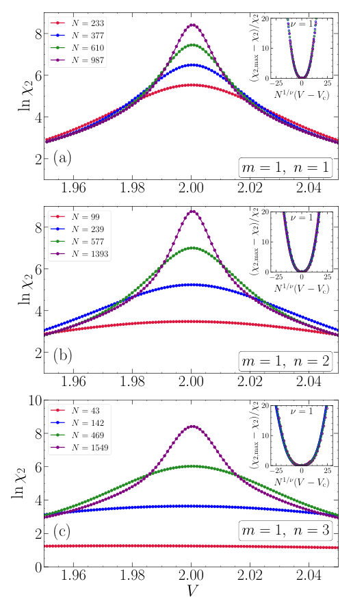
<figcaption class="paper-figure-caption"><b>Fig 1.</b> FIG. 1. The logarithm of the fidelity susceptibility χ2 as a function of the quasiperiodic potential strength V for m = 1: (a) n = 1; (b) n = 2; (c) n = 3. The phase offset is fixed at ϕ = π. The insets show the rescaled fidelity susceptibility (χ2,max −χ2)/χ2 as a function of the scaling variable N 1/ν(V −Vc) for ν = 1. For all three cases, the critical point is Vc = 2, and the data collapse supports the correlation-length exponent ν = 1.</figcaption>
</figure>
<figure class="paper-figure-card">
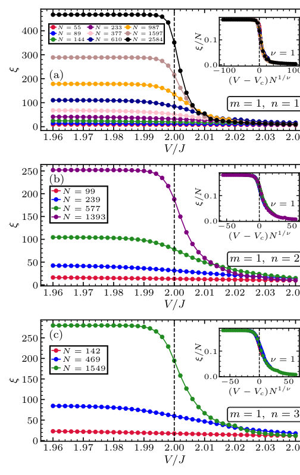
<figcaption class="paper-figure-caption"><b>Fig 2.</b> FIG. 2. The localization length ξ as a function of the quasiperiodic potential strength V for m = 1: (a) n = 1; (b) n = 2; (c) n = 3. The vertical dashed line marks the self-dual critical point Vc = 2. The insets show the rescaled localization length ξ/N as a function of the scaling variable N 1/ν(V −Vc) for ν = 1. All results shown here are averaged over 50 random samples of the phase ϕ.</figcaption>
</figure>
<figure class="paper-figure-card">
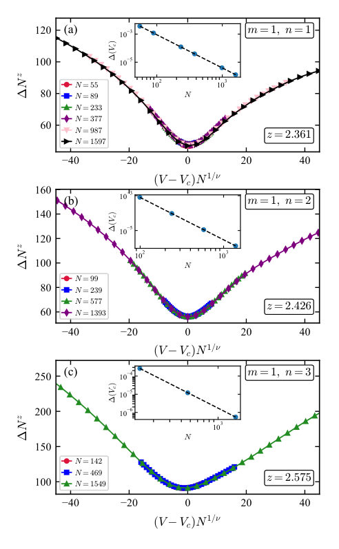
<figcaption class="paper-figure-caption"><b>Fig 3.</b> FIG. 4. The rescaled excitation gap ∆N z as a function of the scaling variable (V −Vc)N 1/ν for m = 1: (a) n = 1; (b) n = 2; (c) n = 3. The insets show the log-log scaling of the critical gap ∆(Vc) with the system size N. For all three cases, the critical point is fixed at the self-dual point Vc = 2, and the data collapse is obtained with ν = 1. The corresponding dynamical exponents are z = 2.361, 2.426, and 2.575 for n = 1, 2, and 3, respectively. All results shown here are averaged over more than 500 random samples of the phase ϕ.</figcaption>
</figure>
<figure class="paper-figure-card">
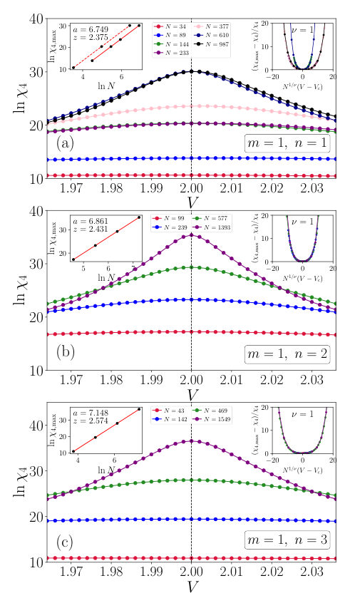
<figcaption class="paper-figure-caption"><b>Fig 4.</b> FIG. 3. Finite-size scaling of the fourth-order fidelity susceptibility χ4 for the generalized AAH model with m = 1 and n = 1, 2, 3. The phase offset is fixed at ϕ = π. The left insets show the log–log fit of the peak value χ4,max according to ln χ4,max = a ln N + b. Using the scaling relation χ4,max ∼N 2/ν+2z and fixing ν = 1, the dynamical exponent is obtained as z = (a −2)/2. The extracted values are z = 2.375±0.004, 2.431±0.001, and 2.574±0.002 for n = 1, 2, and 3, respectively. The right insets show the correspond- ing scaling collapse with fixed ν = 1.</figcaption>
</figure>
<figure class="paper-figure-card">
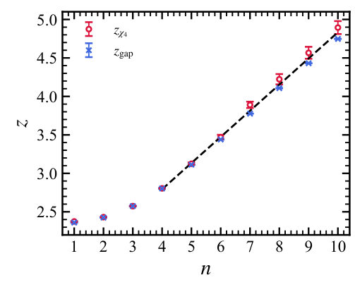
<figcaption class="paper-figure-caption"><b>Fig 5.</b> FIG. 5. Dynamical critical exponent z as a function of the integer n in the generalized AAH model at fixed m = 1. The red circles de- note the exponent zχ4 extracted from the scaling of the fourth-order fidelity susceptibility, while the blue crosses denote zgap extracted from the finite-size scaling of the critical gap. Error bars represent the fitting uncertainties of the corresponding scaling analyses. The black dashed line is an unweighted linear fit to the averaged expo- nent zave = (zχ4 + zgap)/2 using the data with n ≥4. The fit gives zave = an + b, with a = 0.340 ± 0.003 and b = 1.43 ± 0.02. The data for n &lt; 4 are shown for comparison but are not included in the linear fit.</figcaption>
</figure>
</div>

<p><strong>Summary.</strong> This paper demonstrates that the critical dynamics of localization transitions in quasiperiodic systems can be tuned simply by varying the incommensurate frequency ($\Omega$) derived from arithmetic sequences. While the correlation-length exponent remains fixed, the dynamical critical exponent varies systematically, suggesting that the arithmetic properties of the modulation parameter control the non-equilibrium quantum dynamics.</p>
<p><strong>Why it may be interesting.</strong> The finding that the arithmetic structure of an irrational number can act as a control parameter for tuning dynamical critical behavior is highly relevant for understanding non-equilibrium quantum dynamics in engineered systems.</p>
<details>
<summary>Detailed structure</summary>
<p><strong>Main problem.</strong> The study investigates how the dynamical critical exponents of localization transitions in quasiperiodic systems can be tuned without altering the underlying microscopic Hamiltonian.</p>
<p><strong>Main result.</strong> The correlation-length exponent remains constant ($
u \simeq 1$), while the dynamical critical exponent ($z$) varies systematically by changing the incommensurate frequency ($\Omega$) via the arithmetic structure of generalized Fibonacci sequences.</p>
<p><strong>Method.</strong> The analysis employs advanced diagnostics including generalized fidelity susceptibility, localization-length scaling, and finite-size gap analysis applied to the single-particle Schrödinger equation.</p>
<p><strong>Model / system.</strong> The system is a one-dimensional tight-binding chain of spinless fermions subjected to a quasiperiodic onsite potential, defined by $V_j = V \cos(2\pi\Omega j + \phi)$. The quasiperiodicity is controlled by $\Omega$, which is derived from generalized Fibonacci sequences parameterized by $(m, n)$.</p>
<p><strong>Key observables.</strong> Correlation-length exponent ($
u$), Dynamical critical exponent ($z$), Generalized fidelity susceptibility ($\chi^{2r+2}$), and the low-energy energy gap ($\Delta$).</p>
<p><strong>Important parameters / regimes.</strong> Hopping amplitude ($J$), Modulation amplitude ($V$), and the incommensurate frequency ($\Omega$) controlled by the arithmetic parameters $(m, n)$.</p>
<p><strong>Assumptions / limitations.</strong> The analysis assumes the system is quasiperiodic (ruling out rational $\Omega$) and uses finite-size scaling theory to extract critical exponents.</p>
<p><strong>Figures summary.</strong> Figures illustrate data collapse for $
u=1$ using $\ln \chi^2$ and $\xi$ vs $V$ for different modulation parameters, confirming the robustness of $
u$.</p>
<p><strong>Paper structure.</strong> The paper establishes the physical model and the control mechanism using arithmetic sequences. It then applies scaling analyses using fidelity susceptibility and gap measurements to extract $
u$ and $z$, demonstrating the differential dependence of these exponents on the arithmetic parameter $\Omega$.</p>
</details>
<details>
<summary>Abstract</summary>
<p>The critical exponents and universality classes of localization transitions in quasiperiodic systems are of fundamental importance for understanding critical phenomena in aperiodic systems. Here we show that the dynamical critical behavior can be tuned without adding new terms or changing the form of the Hamiltonian, but solely by varying the incommensurate frequency of the quasiperiodic onsite potential. We construct a family of incommensurate frequencies from the limiting ratios of generalized Fibonacci sequences controlled by the parameters $(m,n)$, and use them to define the quasiperiodic onsite potential. By combining generalized fidelity susceptibility, localization-length scaling, and finite-size gap analysis, we find that the correlation-length exponent is insensitive to the choice of the incommensurate frequency and remains consistent with the correlation-length critical exponent, $ν\simeq 1$, in the localization transition of the standard Aubry--Andr'e--Harper model. In contrast, the dynamical exponent extracted from the low-energy gap scaling varies systematically with the incommensurate frequency. Our results show that changing the incommensurate frequency provides a simple way to tune dynamical critical scaling in deterministic aperiodic systems. Our results suggest instead that the arithmetic structure of an irrational number can serve as a control parameter for nonequilibrium quantum dynamics, enabling the tuning of dynamical critical behavior without changing the microscopic Hamiltonian or the physical spatial dimension.</p>
</details>
<p><sub><a href="#top">↑ back to top</a></sub></p>

<p><a id="paper-2608.24200"></a></p>
<h3 id="a-minimal-thermodynamically-consistent-chemical-oscillator"><a href="http://arxiv.org/abs/2608.24200v1">A Minimal Thermodynamically Consistent Chemical Oscillator</a></h3>
<p><strong>Authors:</strong> Benedikt Remlein, Luca Monari, Beatrice Bartolomei, Giulio Ragazzon, Massimiliano Esposito, Emanuele Penocchio<br>
<strong>Type:</strong> theory · <strong>Category:</strong> statistical mechanics · <strong>PDF:</strong> <a href="https://arxiv.org/pdf/2608.24200v1">https://arxiv.org/pdf/2608.24200v1</a><br>
<strong>Analysis basis:</strong> full PDF text, analyzed in chunks
<strong>Topic relevance:</strong> <code>driven-dissipative phase transition</code> <strong>3/5</strong> · <code>non-equilibrium universality</code> <strong>3/5</strong> · <code>Keldysh / 2PI / non-Gaussian methods</code> <strong>1/5</strong> · <code>correlated / nonlocal dissipation</code> <strong>1/5</strong> · <code>methods for driven-dissipative</code> <strong>1/5</strong></p>
<div class="figure-strip-hint">↔ Scroll figures horizontally</div>
<div class="paper-figures-scroll">
<figure class="paper-figure-card">
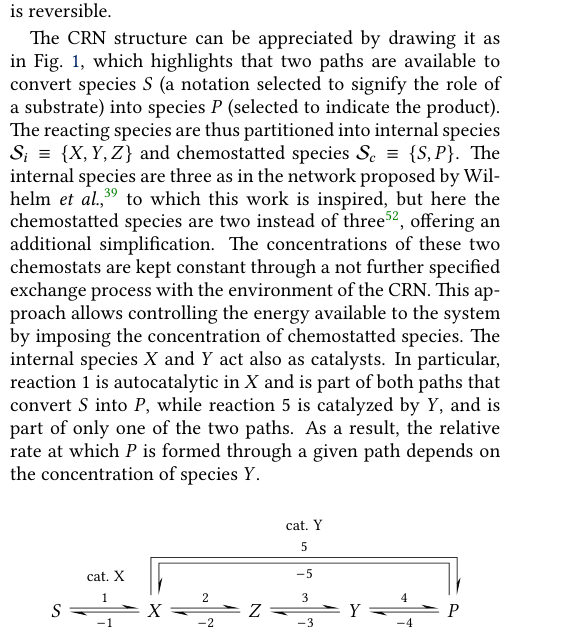
<figcaption class="paper-figure-caption"><b>Fig 1.</b> FIG. 1. Schematics of the reaction network associated with the set of reactions in equation (1), with catalyzed steps explicitly indicated.</figcaption>
</figure>
<figure class="paper-figure-card">
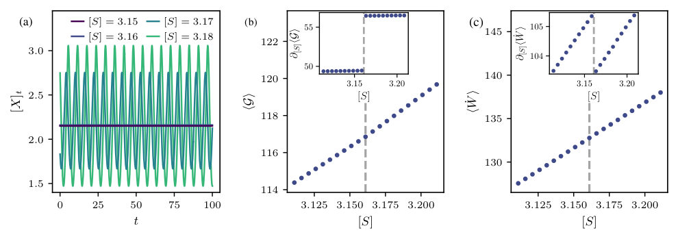
<figcaption class="paper-figure-caption"><b>Fig 2.</b> FIG. 2. Hopf bifurcation and thermodynamic signatures in the minimal CRN (1). (a) Time evolution of the concentration [𝑋] for different values of the control parameter [𝑆], with oscillations observed for [𝑆] &gt; [𝑆𝑐] ≃3.161. (b) Time-averaged semi-grand Gibbs free energy ⟨G⟩as a function of [𝑆]. Inset: the derivative 𝜕[𝑆] ⟨G⟩is discontinuous at the critical value [𝑆𝑐] ≃3.161 and increases across the bifurcation. (c) Time- averaged non-conservative work rate ⟨¤𝑊⟩as a function of [𝑆]. Inset: the derivative 𝜕[𝑆] ⟨¤𝑊⟩is discontinuous at [𝑆𝑐] and decreases across the bifurcation. The grey dashed line indicates [𝑆𝑐]. Parameters (arbitrary units): 𝑘1 = 𝑘2 = 𝑘3 = 𝑘4 = 𝑘5 = 1, 𝑘−1 = 𝑘−2 = 𝑘−3 = 𝑘−4 =...</figcaption>
</figure>
<figure class="paper-figure-card">
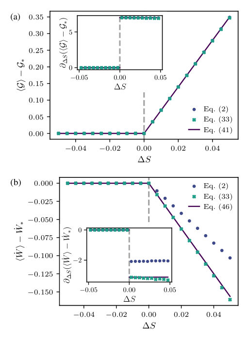
<figcaption class="paper-figure-caption"><b>Fig 3.</b> FIG. 3. Comparison of the reversible CRN (1), the irreversible CRN (32), and the analytical solution in the vicinity of the Hopf bifurcation. Here, Δ𝑆≡[𝑆] −[𝑆𝑐] for the reversible RRE (2), and Δ𝑆≡[𝑆] −[𝑆HB] for the irreversible RRE (33). The analyt- ical solutions are obtained using Eq. (41) and Eq. (46). (a) Time- averaged semi-grand Gibbs free energy ⟨G⟩−G∗as a function of the control parameter Δ𝑆. Inset: the derivative 𝜕Δ𝑆(⟨G⟩−G∗) is dis- continuous at the bifurcation. (b) Time-averaged non-conservative work rate ⟨¤𝑊⟩−¤𝑊∗as a function of Δ𝑆. Inset: 𝜕Δ𝑆(⟨¤𝑊⟩−¤𝑊∗) is discontinuous at the bifurcation. Parameters (arbitrary units): 𝜅1 = 𝜅2 = 𝜅3 = 𝜅4 = 𝜅5 = 1, 𝜅−1 = 𝜅−2 = 𝜅−3 = 𝜅−4 = 10−2,...</figcaption>
</figure>
<figure class="paper-figure-card">
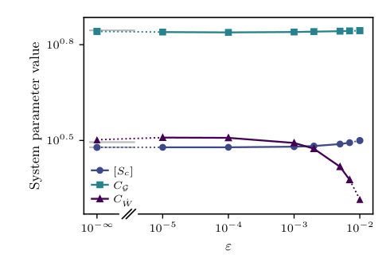
<figcaption class="paper-figure-caption"><b>Fig 4.</b> FIG. 4. Approach to the irreversible limit. Backward rates are pa- rameterized by 𝜅−1 = 𝜅−2 = 𝜅−3 = 𝜀and 𝜅−5 = 𝜀2, preserving the Wegscheider condition. Shown are the numerically extracted Hopf threshold [𝑆𝑐] and jump coefficients 𝐶G and 𝐶¤𝑊as functions of 𝜀. Horizontal lines indicate the analytical predictions from the irreversible approximation (𝜀→0). The convergence demonstrates that the irreversible model captures the leading-order behavior of the reversible CRN.</figcaption>
</figure>
<figure class="paper-figure-card">
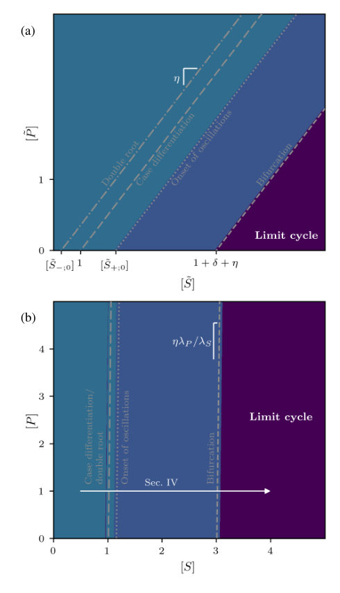
<figcaption class="paper-figure-caption"><b>Fig 5.</b> FIG. 5. Phase space of the irreversible and reversible CRNs. (a) Schematic phase-space sketch of the irreversible CRN (32) using dimensionless concentrations, Eq. (30). The boundaries [ ˜𝑆±;0] = −2𝛿3+27𝛿𝜂+3𝛿2𝜂+3𝛿𝜂2−2𝜂3±2(𝛿2−𝛿𝜂+𝜂2)3/2</figcaption>
</figure>
</div>

<p><strong>Summary.</strong> This paper develops a minimal, thermodynamically consistent chemical oscillator model to study autonomous oscillations driven by non-equilibrium processes. Using advanced mathematical techniques like normal-form reduction, the authors analytically determine the Hopf bifurcation point. Crucially, they show that this dynamical transition is accompanied by sharp, quantifiable discontinuities in key thermodynamic observables, bridging non-equilibrium dynamics and thermodynamics.</p>
<p><strong>Why it may be interesting.</strong> The rigorous connection drawn between a non-equilibrium dynamical transition (Hopf bifurcation) and measurable thermodynamic quantities (discontinuities in free energy/work rate) provides a powerful theoretical tool for characterizing open, non-equilibrium systems.</p>
<details>
<summary>Detailed structure</summary>
<p><strong>Main problem.</strong> To introduce and analyze a minimal, thermodynamically consistent chemical oscillator that exhibits autonomous oscillations under non-equilibrium driving.</p>
<p><strong>Main result.</strong> The system undergoes a supercritical Hopf bifurcation at a critical parameter value, which is analytically linked to kink-like discontinuities in time-averaged thermodynamic observables like the semi-grand Gibbs free energy and non-conservative work rate.</p>
<p><strong>Method.</strong> The analysis employs normal-form reduction near the Hopf bifurcation point, utilizing a controlled irreversible approximation to analytically determine the bifurcation structure and thermodynamic response.</p>
<p><strong>Model / system.</strong> The model is a Chemical Reaction Network (CRN) involving five species, featuring reversible, uni- and bi-molecular reactions, and open to an environment via chemostatting. The dynamics are governed by the Reaction Rate Equation.</p>
<p><strong>Key observables.</strong> Semi-grand Gibbs free energy, non-conservative work rate, Hopf bifurcation point, limit cycle radius, and angular frequency.</p>
<p><strong>Important parameters / regimes.</strong> Chemostat concentration (control parameter), reaction rate constants, and the bifurcation parameter $[S]$.</p>
<p><strong>Assumptions / limitations.</strong> The reactions are assumed to be elementary, allowing the use of Local Detailed Balance (LDB), and the analysis relies on normal-form reduction near the bifurcation point.</p>
<p><strong>Figures summary.</strong> Figures illustrate the schematic reaction network, the time evolution of thermodynamic quantities ($\langle G 
angle$ and $\langle \dot{W} 
angle$) across the Hopf bifurcation, and the convergence of analytical predictions for the bifurcation threshold.</p>
<p><strong>Paper structure.</strong> The paper establishes the minimal CRN, derives the necessary thermodynamic balance equations, analyzes the dynamics using normal-form reduction near the Hopf bifurcation, and finally calculates the discontinuity of thermodynamic observables at the onset of oscillations.</p>
</details>
<details>
<summary>Abstract</summary>
<p>Inspired by the chemical reaction network considered as the smallest system featuring a Hopf bifurcation and its reversible extension, we introduce an even more minimal reaction network that is thermodynamically consistent and exhibits autonomous oscillations under nonequilibrium driving. The model combines three features that are rarely realized simultaneously in compact oscillator networks: a chemically plausible structure restricted to uni- and bimolecular reactions, reversibility of such reactions, and analytical tractability. The system consists of three internal species coupled to two chemostatted species and still undergoes a supercritical Hopf bifurcation when a chemostat concentration is varied. To analyze the dynamics and thermodynamics near the onset of oscillations, we employ the mathematical technique of normal-form reduction, which allows obtaining a controlled irreversible approximation that preserves the leading phase-space structure of the full reversible network while enabling explicit calculations. This framework provides analytical access to the bifurcation structure and the leading contributions governing thermodynamic observables. Within this setting, we use the onset of oscillations to characterize the thermodynamic response of the system. In particular, we offer an analytical description of key thermodynamic quantities such as the semi-grand Gibbs free energy and the non-conservative work rate, which exhibit a kink-like discontinuity at the Hopf bifurcation. We thus provide an analytical description of a phenomenon previously characterized only through numerical simulations of more complex networks.</p>
</details>
<p><sub><a href="#top">↑ back to top</a></sub></p>

<p><a id="paper-2608.24158"></a></p>
<h3 id="geometric-thermodynamics-of-scallop-motion-with-two-control-parameters"><a href="http://arxiv.org/abs/2608.24158v1">Geometric Thermodynamics of Scallop Motion with Two Control Parameters</a></h3>
<p><strong>Authors:</strong> Hisao Hayakawa<br>
<strong>Type:</strong> theory · <strong>Category:</strong> statistical mechanics · <strong>PDF:</strong> <a href="https://arxiv.org/pdf/2608.24158v1">https://arxiv.org/pdf/2608.24158v1</a><br>
<strong>Analysis basis:</strong> full PDF text, analyzed in chunks
<strong>Topic relevance:</strong> <code>non-equilibrium universality</code> <strong>3/5</strong> · <code>Keldysh / 2PI / non-Gaussian methods</code> <strong>2/5</strong> · <code>methods for driven-dissipative</code> <strong>2/5</strong> · <code>driven-dissipative phase transition</code> <strong>1/5</strong></p>
<div class="figure-strip-hint">↔ Scroll figures horizontally</div>
<div class="paper-figures-scroll">
<figure class="paper-figure-card">
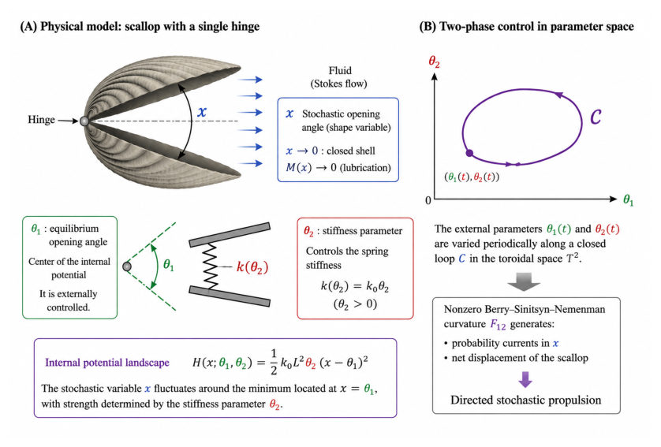
<figcaption class="paper-figure-caption"><b>Fig 1.</b> FIG. 1. Schematic of the scallop model and two-phase driving protocol. (A) A scallop swimmer is represented by two rigid plates connected by a single hinge. The instantaneous opening angle x is the internal stochastic coordinate. The equilibrium opening angle θ1 sets the center of the internal potential, while the stiffness parameter θ2 modulates the hinge spring, k(θ2) = k0θ2. The internal potential is H(x; θ1, θ2) = 1/2k0L2θ2(x −θ1)2. Near the closed configuration x →0, the hydrodynamic mobility Mcl(x) vanishes due to lubrication. (B) The two control parameters (θ1, θ2) are varied periodically along a closed loop C in the two-dimensional toroidal parameter space T2. The resulting BSN...</figcaption>
</figure>
<figure class="paper-figure-card">

<figcaption class="paper-figure-caption"><b>Fig 2.</b> Figure 1 summarizes the physical setup and overall logical structure of this study. We model a single-hinge scallop swimmer whose internal opening angle x is coupled to translational motion via a position-dependent mobility Meff(x) and a hydrodynamic connection G(x) (Sec. II B). Crucially, while x undergoes thermal fluctuations in a potential V (x; θ), the potential landscape is driven by two external control parameters, θ = (θ1, θ2)T , representing the potential minimum and effective stiffness, respectively (Sec. II C). A periodic modulation along a closed path C in parameter space T2 generates a non-zero probability current. In</figcaption>
</figure>
<figure class="paper-figure-card">
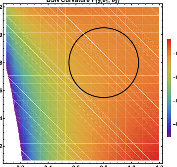
<figcaption class="paper-figure-caption"><b>Fig 3.</b> FIG. 2. Heatmap of the BSN curvature F12(θ1, θ2). The solid black circle denotes a typical circular trajectory in the parameter space used to extract a finite geometric displacement ∆X.</figcaption>
</figure>
<figure class="paper-figure-card">

<figcaption class="paper-figure-caption"><b>Fig 4.</b> Figure 3 shows the heatmap of the geometric displacement per cycle, ∆X(¯θ1, ¯θ2), as a function of the center coordinates (¯θ1, ¯θ2) for a fixed loop radius rloop := p</figcaption>
</figure>
<figure class="paper-figure-card">
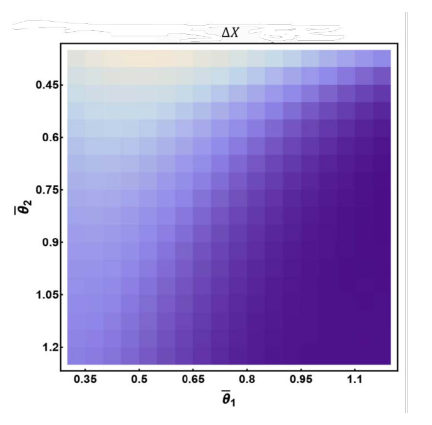
<figcaption class="paper-figure-caption"><b>Fig 5.</b> FIG. 3. Heatmap of the geometric displacement ∆X(¯θ1, ¯θ2) in the mean-parameter space with a fixed loop radius rloop = 0.2.</figcaption>
</figure>
</div>

<p><strong>Summary.</strong> This theoretical paper develops a geometric framework to explain how micro-swimmers can generate directed motion by exploiting thermal fluctuations when driven by time-varying external parameters. It mathematically links the resulting propulsion to the non-zero curvature of the parameter space and quantifies the associated energy dissipation using a Riemannian metric. This unifies concepts from stochastic mechanics, thermodynamics, and geometry in the context of active matter.</p>
<p><strong>Why it may be interesting.</strong> It provides a powerful geometric framework linking non-equilibrium thermodynamics (entropy production) directly to the topology of the control parameter space (Berry curvature), which is a concept highly relevant in quantum pumping and quantum control.</p>
<details>
<summary>Detailed structure</summary>
<p><strong>Main problem.</strong> To show how thermal fluctuations allow a micro-swimmer (scallop) to achieve directed propulsion, bypassing the constraints of Purcell's scallop theorem.</p>
<p><strong>Main result.</strong> Directed geometric propulsion is achieved when the control parameters are cyclically modulated, leading to a non-zero Berry-Sinitsyn-Nemenman curvature and excess entropy production quantified by a Riemannian metric.</p>
<p><strong>Method.</strong> The analysis uses stochastic thermodynamics, solving the Smoluchowski equation via perturbation theory and generalized inverse operators to calculate non-equilibrium work and entropy production.</p>
<p><strong>Model / system.</strong> The system is a single-hinge scallop swimmer whose stochastic shape dynamics are governed by a Smoluchowski equation dependent on two time-varying control parameters ($    heta_1,     heta_2$).</p>
<p><strong>Key observables.</strong> Non-zero Berry-Sinitsyn-Nemenman curvature ($F_{12}$), Riemannian thermodynamic metric ($g_{ij}$), and excess entropy production ($\Sigma_{ex}$).</p>
<p><strong>Important parameters / regimes.</strong> The slow-driving parameter $\epsilon$, and the control parameters $    heta(t)$ which are modulated along a closed loop in the parameter space $T^2$.</p>
<p><strong>Assumptions / limitations.</strong> The analysis assumes Stokes flow ($  ext{Re} \ll 1$), utilizes perturbation theory for slow driving, and relies on the generalized inverse operator for the Smoluchowski generator.</p>
<p><strong>Figures summary.</strong> Figure 1 schematically illustrates the scallop model and shows that cycling the control parameters along a closed loop in the parameter space induces the necessary geometric curvature and non-zero net displacement.</p>
<p><strong>Paper structure.</strong> The paper develops the framework by first establishing the stochastic dynamics via the Smoluchowski equation, then applying perturbation theory to calculate non-equilibrium corrections, and finally deriving the geometric connection between excess entropy production and the Riemannian metric tensor.</p>
</details>
<details>
<summary>Abstract</summary>
<p>According to Purcell's scallop theorem, reciprocal single-degree-of-freedom shape deformations cannot achieve net propulsion in a viscous fluid. We show that this limitation is bypassed by thermal fluctuations in a two-parameter driven potential landscape. Formulating the stochastic shape dynamics via a Smoluchowski equation with position-dependent mobility $M_\mathrm{eff}(x)$, we utilize a generalized inverse operator to evaluate the slow-driving response. Cyclic modulation of the control parameters induces a non-zero Berry-Sinitsyn-Nemenman curvature $F_{12}(\bmθ)$, resulting in directed geometric propulsion. Simultaneously, the non-adiabatic excess dissipation is dictated by a Riemannian thermodynamic metric $g_{ij}(\bmθ)$. Our results provide a unified geometric foundation that bridges hydrodynamic friction, stochastic mechanics, and thermodynamic trade-offs in micro-swimmers.</p>
</details>
<p><sub><a href="#top">↑ back to top</a></sub></p>

<p><a id="paper-2608.24770"></a></p>
<h3 id="geometry-controlled-correlated-electric-field-noise-in-enclosed-ion-traps-from-billiard-return-spectra"><a href="http://arxiv.org/abs/2608.24770v1">Geometry-controlled correlated electric-field noise in enclosed ion traps from billiard return spectra</a></h3>
<p><strong>Authors:</strong> Ayush Nadiger<br>
<strong>Type:</strong> theory · <strong>Category:</strong> other · <strong>PDF:</strong> <a href="https://arxiv.org/pdf/2608.24770v1">https://arxiv.org/pdf/2608.24770v1</a><br>
<strong>Analysis basis:</strong> full PDF text, analyzed in chunks
<strong>Topic relevance:</strong> <code>correlated / nonlocal dissipation</code> <strong>3/5</strong> · <code>Keldysh / 2PI / non-Gaussian methods</code> <strong>1/5</strong> · <code>QC/QI experiment</code> <strong>1/5</strong> · <code>analog quantum simulation</code> <strong>1/5</strong> · <code>methods for driven-dissipative</code> <strong>1/5</strong> · <code>quantum measurements</code> <strong>1/5</strong></p>
<div class="figure-strip-hint">↔ Scroll figures horizontally</div>
<div class="paper-figures-scroll">
<figure class="paper-figure-card">
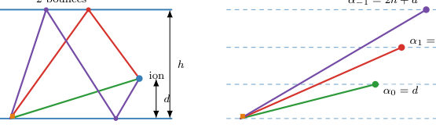
<figcaption class="paper-figure-caption"><b>Fig 1.</b> FIG. 1. Parallel-wall geometry in three equivalent forms. Left: direct and reflected billiard paths from a point on the noisy plane to the ion. Center: unfolding turns the reflections into straight paths to image ions. Right: the corresponding normal-depth measure µ⊥ h = P</figcaption>
</figure>
<figure class="paper-figure-card">
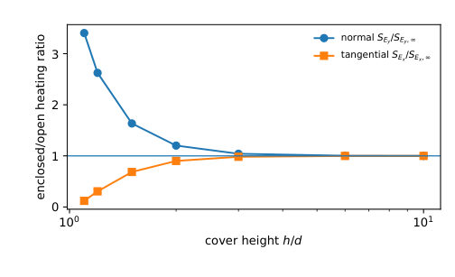
<figcaption class="paper-figure-caption"><b>Fig 2.</b> FIG. 2. Mode-selective anomalous heating for a local source in the physical slab. A passive cover increases normal heating while suppressing tangential heating. At h/d = 2 the exact ratios are ζ(3) and η(3).</figcaption>
</figure>
<figure class="paper-figure-card">
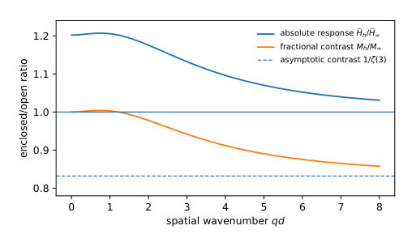
<figcaption class="paper-figure-caption"><b>Fig 3.</b> FIG. 3. Absolute response and fractional contrast at h/d = 2 for the physical D = 2 slab. The enclosure increases b H at every wavenumber, while the normalized response Mh/M∞ falls below unity over the moderate- and high-q regime and tends to 1/ζ(3).</figcaption>
</figure>
<figure class="paper-figure-card">
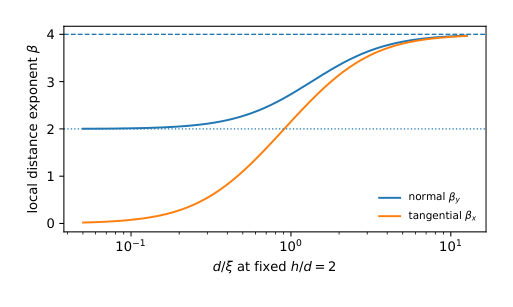
<figcaption class="paper-figure-caption"><b>Fig 4.</b> FIG. 4. Local distance exponents for a Gaussian surface covariance at fixed h/d = 2. The normal mode crosses from the capacitor-like d−2 regime to the local-patch d−4 regime, while the tangential component approaches d0 for very large patches before recovering d−4.</figcaption>
</figure>
<figure class="paper-figure-card">
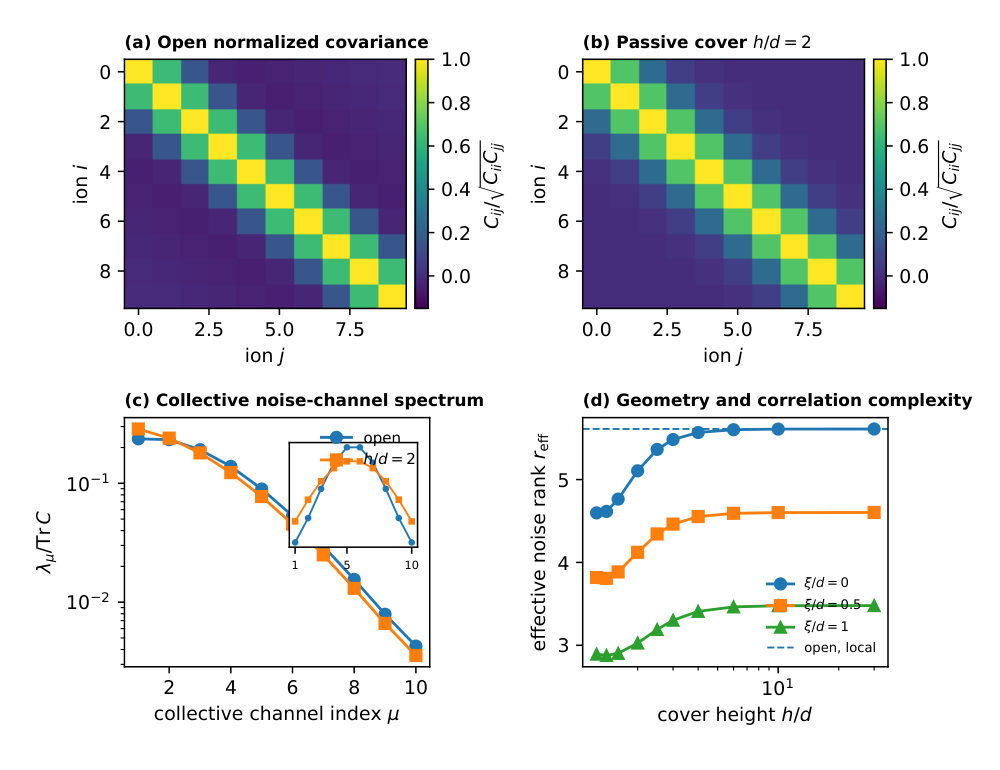
<figcaption class="paper-figure-caption"><b>Fig 5.</b> FIG. 5. Collective normal-field noise for N = 10 equally spaced probes with spacing 0.6d. (a,b) Normalized spatial covariance in the open half-space and at h/d = 2. (c) Eigenvalues of the equal-frequency covariance/heating matrix normalized by their sum; the inset shows the leading covariance-eigenchannel profile. (d) Participation-ratio noise rank versus cover height for local and finite-correlation Gaussian surface spectra. The cover raises every absolute normal-field quadratic form while concentrating a larger fraction of the total noise into the leading collective channels.</figcaption>
</figure>
</div>

<p><strong>Summary.</strong> This theoretical paper determines how the physical boundaries of an ion trap control the correlated electric-field noise acting on trapped ions. By employing techniques from spectral theory and billiards, the authors show that the enclosure geometry selectively enhances normal-field noise while suppressing tangential-field noise. This provides a fundamental understanding of how passive electrode design can be used to engineer the quantum noise environment for quantum computing applications.</p>
<p><strong>Why it may be interesting.</strong> This work provides a powerful, quantitative link between macroscopic electrostatics (geometry) and microscopic quantum noise processes (heating rates, Lindblad operators) in trapped ions, offering a new diagnostic tool for trap quality.</p>
<details>
<summary>Detailed structure</summary>
<p><strong>Main problem.</strong> The paper investigates how the passive conducting geometry of an enclosed ion trap dictates the spatial structure and magnitude of correlated electric-field noise experienced by trapped ions.</p>
<p><strong>Main result.</strong> The enclosure geometry imposes a mode-selective filtering effect, increasing normal-field noise while decreasing tangential-field noise, and provides an exact return-pair functional describing this noise.</p>
<p><strong>Method.</strong> The analysis uses boundary-potential covariance, the Dirichlet Green function, and billiard unfolding techniques to construct the electric-field cross-spectral matrix and its associated Kossakowski generator.</p>
<p><strong>Model / system.</strong> The system is trapped ions confined within an enclosed geometry, such as a parallel slab or a general curved cover. The noise source is modeled as a stochastic electric field fluctuating due to the surrounding passive conductors.</p>
<p><strong>Key observables.</strong> Electric-field cross-spectral matrix, collective environmental noise eigenchannels, noise rank, and the ratio of normal-to-tangential heating rates ($\zeta(3)$ and $\eta(3)$ at specific limits).</p>
<p><strong>Important parameters / regimes.</strong> The ratio of cover height to ion spacing ($h/d$), the frequency ($\omega$), and the ion number ($N$).</p>
<p><strong>Assumptions / limitations.</strong> The analysis relies on the Born–Markov secular approximation and assumes fixed stochastic source statistics, focusing on the geometric reshaping of the noise operator.</p>
<p><strong>Figures summary.</strong> Figures illustrate the mode-selective filtering effect (normal vs. tangential heating ratios) and show the correlation between the electrostatic decay exponent and the shortest specular excess length across curved covers.</p>
<p><strong>Paper structure.</strong> The paper progresses from establishing the general framework using boundary-potential covariance to deriving the exact return-pair functional for the parallel slab. It then applies this framework to show the collective ordering theorem for normal/tangential fields and extends the analysis to general curved covers, concluding with diagnostics on noise rank and gate exposure.</p>
</details>
<details>
<summary>Abstract</summary>
<p>We ask how passive conducting geometry determines the spatial structure of electric-field noise seen by trapped ions. From a boundary-potential covariance and the Dirichlet Green function we construct the $N$-ion electric-field cross-spectral matrix and its blockwise motional Kossakowski generator. In a parallel slab, billiard unfolding turns the electrostatic response into a return-depth measure and yields an exact return-pair functional for arbitrary stationary surface spectra. For every finite equal-height ion array, the passive cover increases the normal-field covariance matrix in the positive-semidefinite ordering and decreases the tangential-field covariance matrix in the same ordering: all collective normal-field coordinates acquire more absolute noise, while all collective tangential coordinates acquire less. At $h=2d$ the local-noise single-ion ratios are exactly $ζ(3)$ and $η(3)$.   Diagonalizing the equal-frequency covariance identifies collective environmental noise eigenchannels and a geometry-dependent noise rank; within a degenerate frequency block these become the Lindblad jump channels. In a ten-ion example, closing the cover to $h=2d$ lowers the participation rank from 5.61 to 5.11 while increasing the leading channel's share from 23.7% to 28.6%; a primitive Mølmer-Sørensen calculation shows how the projected covariance sets the weak-heating gate exposure. Beyond parallel walls, specular paths emerge as large-$q_z$ saddles of the screened boundary operator. Across 16 curved covers, the fitted electrostatic decay exponent correlates at 0.9991 with the independently computed shortest specular excess length, while separate tests resolve focusing and competing saddles.</p>
</details>
<p><sub><a href="#top">↑ back to top</a></sub></p>

<p><a id="paper-2608.24689"></a></p>
<h3 id="jerky-motion-of-active-granular-particles"><a href="http://arxiv.org/abs/2608.24689v1">Jerky Motion of Active Granular Particles</a></h3>
<p><strong>Authors:</strong> Alexander P. Antonov, Marco Musacchio, Hartmut Löwen, Lorenzo Caprini<br>
<strong>Type:</strong> both · <strong>Category:</strong> statistical mechanics · <strong>PDF:</strong> <a href="https://arxiv.org/pdf/2608.24689v1">https://arxiv.org/pdf/2608.24689v1</a><br>
<strong>Analysis basis:</strong> full PDF text, analyzed in chunks
<strong>Topic relevance:</strong> <code>non-equilibrium universality</code> <strong>3/5</strong> · <code>Frenkel-Kontorova</code> <strong>1/5</strong> · <code>Keldysh / 2PI / non-Gaussian methods</code> <strong>1/5</strong> · <code>correlated / nonlocal dissipation</code> <strong>1/5</strong> · <code>driven-dissipative phase transition</code> <strong>1/5</strong> · <code>methods for driven-dissipative</code> <strong>1/5</strong></p>
<div class="figure-strip-hint">↔ Scroll figures horizontally</div>
<div class="paper-figures-scroll">
<figure class="paper-figure-card">
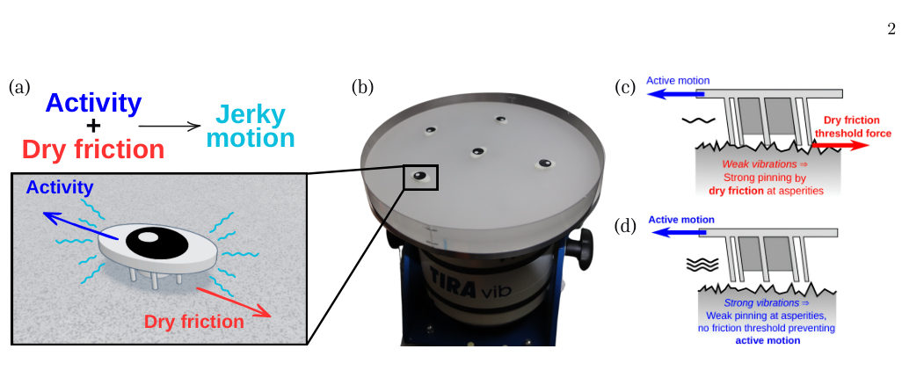
<figcaption class="paper-figure-caption"><b>Fig 1.</b> FIG. 1. (a) Illustration of an active particle subject to dry friction, giving rise to jerky motion. (b) Experimental setup consisting of active vibrobots on a vertically vibrating plate. (c,d) Schematic illustration of the frictional contact. Under weak plate vibrations, the vibrobot remains strongly pinned at surface asperities, preventing active motion until the active force exceeds the dry-friction threshold (c). In this regime, the interplay between activity and dry friction gives rise to jerky motion. Under strong vibrations, pinning is greatly reduced (d), rendering dry friction ineffective and allowing persistent active motion.</figcaption>
</figure>
<figure class="paper-figure-card">
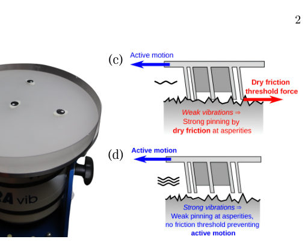
<figcaption class="paper-figure-caption"><b>Fig 2.</b> Figure 2(a)-(b) shows that, at lower shaker amplitudes, the particle speed increases more sharply with time than at higher amplitudes. In both cases, slow diffusive ac- tivations are excluded to distinguish activity-driven mo- tion from passive diffusive dynamics. To characterize the underlying dynamics, we fit the time behavior of the par- ticle speed in the intermediate-velocity regime using the scaling relation v ∼tα. We focus on this regime be- cause, at high velocities, strong vibrations reduce the frequency of activation collisions with the plate, natu- rally slowing the acceleration, as shown in Fig. 2(a)-(b). These analyses reveal that α approaches the value ex- pected for jerky...</figcaption>
</figure>
<figure class="paper-figure-card">
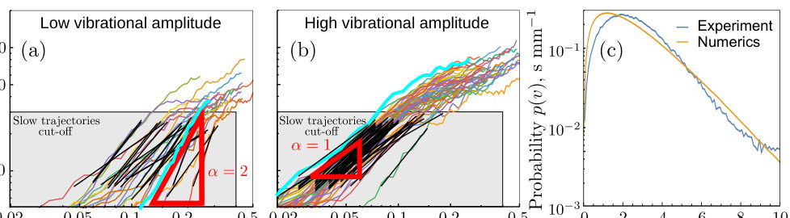
<figcaption class="paper-figure-caption"><b>Fig 3.</b> FIG. 2. (a-b) Speed evolution analysis of experimental vibrobots initiating their motion after being at rest for (a) a regime dominated by dry friction (shaker’s frequency 75 Hz and amplitude 51.186 ± 0.160 µm, 20 trajectories), and (b) pinning-free regime (shaker’s frequency 75 Hz, amplitude 65.200 ± 0.217 µm, 43 trajectories). In the experiment, slow particles are excluded by imposing a threshold speed that must be achieved within a prescribed time window, as indicated by the gray rectangle. These results reveal much sharper speed increase for the dry friction case. The fitted exponent of v ∼tα, averaged over v ∈[7, 25], yields (a) α = 1.84±0.18, consistent with jerky motion within...</figcaption>
</figure>
<figure class="paper-figure-card">
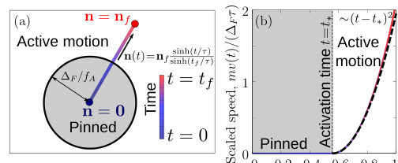
<figcaption class="paper-figure-caption"><b>Fig 4.</b> FIG. 3. (a) Time color-coded activation path from the pinned state n = 0 to the activated state n = nf. The approximate form near the activation moment t = t∗(circle boundary) is given by Eq. (4) in the main text, while the full expression is provided in Eq. (11) of the End Matter. (b) Character- istic speed evolution given by Eq. (5a) along this activation path. For t &lt; t∗, the particle remains pinned and at rest (gray area), while after the activation at t = t∗the speed exhibits the quadratic growth characteristic of jerky motion. The color coding is identical in the main panel and the inset. The parameters are tf = τ, |nf| = 2, and ∆F /fA = 1.</figcaption>
</figure>
<figure class="paper-figure-card">
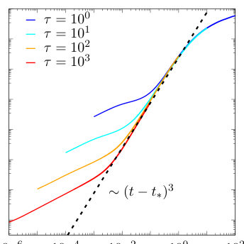
<figcaption class="paper-figure-caption"><b>Fig 5.</b> FIG. 4. Scaled average displacement vs scaled time, demon- strating the data collapse onto a common curve. Displace- ments are calculated numerically from Eq. (3) with ∆F /fA = 1, K = 0 for the particle initiating its motion after being at rest. The averaging is performed over 5000 such activation events. For (t −t∗)/τ ≲1, the displacement follows the scal- ing law (6b) with C = 0.36, represented by the dashed line.</figcaption>
</figure>
</div>

<p><strong>Summary.</strong> This work investigates jerky motion in active granular particles caused by the combination of self-propulsion and dry friction. The authors demonstrate that this interaction forces the dynamics into a jerk-dominated regime, predicting a quadratic increase in speed over time. The findings are supported by theoretical modeling, numerical analysis, and physical experiments using active vibrobots.</p>
<p><strong>Why it may be interesting.</strong> The emergence of higher-order, non-Markovian dynamics from simple frictional contacts is a general mechanism in non-equilibrium statistical physics, relevant for understanding energy dissipation and transport in complex active matter systems.</p>
<details>
<summary>Detailed structure</summary>
<p><strong>Main problem.</strong> The standard Newtonian description is insufficient for systems exhibiting abrupt transitions between rest and motion, necessitating the inclusion of higher-order derivatives like jerk.</p>
<p><strong>Main result.</strong> The interplay between activity and dry friction robustly generates jerk-dominated dynamics, leading to quadratic speed increase ($v \sim t^2$) rather than the linear growth expected classically.</p>
<p><strong>Method.</strong> The study combines analytical derivations (using path integrals and Onsager-Machlup functionals) with numerical simulations and physical experiments using active vibrobots.</p>
<p><strong>Model / system.</strong> The system involves self-propelled particles (active granular particles) subjected to an active force and dry friction, which introduces a threshold for motion.</p>
<p><strong>Key observables.</strong> Particle speed scaling exponent ($\alpha$), displacement scaling ($\delta r \sim t^3$), and the probability of activation.</p>
<p><strong>Important parameters / regimes.</strong> Dry friction threshold force ($\Delta F$), activity strength, vibration amplitude (low vs. high), and persistence time ($  au$).</p>
<p><strong>Assumptions / limitations.</strong> The analysis often relies on approximations such as neglecting white noise or assuming the velocity after activation is independent of the activation point.</p>
<p><strong>Figures summary.</strong> Figures illustrate the mechanism of jerky motion due to dry friction, compare speed evolution in jerky vs. Newtonian regimes, and show data collapse confirming cubic scaling of displacement.</p>
<p><strong>Paper structure.</strong> The paper establishes the theoretical need for higher-order dynamics, models the system using active Ornstein-Uhlenbeck processes coupled with dry friction, derives scaling laws, and validates these predictions through both numerical simulations and physical experiments.</p>
</details>
<details>
<summary>Abstract</summary>
<p>Abrupt transitions between rest and motion can render the standard Newtonian description -- based on position, velocity, and acceleration -- incomplete, requiring higher-order derivatives such as the jerk, the third time derivative of position. Here, we show that the interplay between activity and dry friction gives rise to robust jerk-dominated dynamics in self-propelled particles: the particle speed increases quadratically with time under an active force, in contrast to the linear growth expected for conventional Newtonian dynamics. We demonstrate this behavior analytically, numerically, and experimentally using active vibrobots self-propelling on a vertically vibrating plate at low vibration amplitudes, where surface asperities generate dry friction and, thus, give rise to jerky motion when combined with activity. Our results establish dry friction as a simple mechanism for realizing higher-order dynamics in active matter and suggest that jerky dynamics may arise broadly in nonequilibrium systems with frictional contacts.</p>
</details>
<p><sub><a href="#top">↑ back to top</a></sub></p>

<p><a id="paper-2608.24092"></a></p>
<h3 id="quantum-secure-time-transfer-for-satellites"><a href="http://arxiv.org/abs/2608.24092v1">Quantum Secure Time Transfer for Satellites</a></h3>
<p><strong>Authors:</strong> Ravi Singh Adhikari, Anju Rani, Aman Gupta, Xiaoyu Ai, Robert Malaney<br>
<strong>Type:</strong> experiment · <strong>Category:</strong> quantum information and computing · <strong>PDF:</strong> <a href="https://arxiv.org/pdf/2608.24092v1">https://arxiv.org/pdf/2608.24092v1</a><br>
<strong>Analysis basis:</strong> full PDF text, analyzed in chunks
<strong>Topic relevance:</strong> <code>QC/QI experiment</code> <strong>3/5</strong> · <code>quantum optics experiment</code> <strong>3/5</strong> · <code>interference shaping light</code> <strong>1/5</strong> · <code>quantum measurements</code> <strong>1/5</strong></p>
<div class="figure-strip-hint">↔ Scroll figures horizontally</div>
<div class="paper-figures-scroll">
<figure class="paper-figure-card">
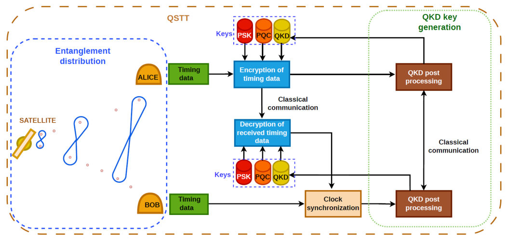
<figcaption class="paper-figure-caption"><b>Fig 1.</b> Fig. 1: The QSTT system. A satellite with an onboard entangled photon source distributes entangled photons to Alice and Bob’s ground stations. Timing data is generated locally by both parties from the photon’s detection. Alice encrypts the timing data using the method described in Section II-B and transmits it to Bob via a classical communication channel. Upon receiving Alice’s encrypted timing data, Bob decrypts it, performs clock synchronization using his and Alice’s timing information, and corrects his time tag using the estimated clock offset. Upon successful synchronization, they perform QKD post-processing, including key sifting, error estimation, error correction, and privacy...</figcaption>
</figure>
<figure class="paper-figure-card">
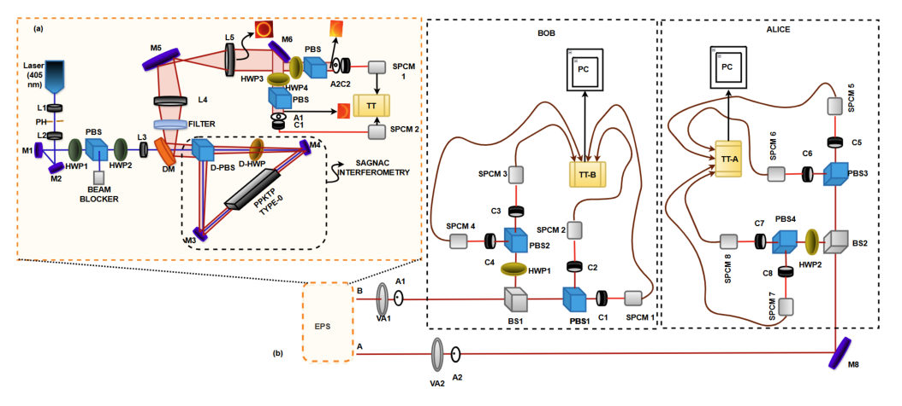
<figcaption class="paper-figure-caption"><b>Fig 2.</b> Fig. 2: (a) Schematic of the experimental setup for degenerate, non-collinear, polarization-entangled photon-pair generation via the spontaneous parametric downconversion process in a type-0 PPKTP crystal using a Sagnac interferometer. The pump and the generated entangled photons are represented by blue and red rays, respectively. PH: Pinhole; HWP: Half-wave plate; PBS: Polarizing beam splitter; DM: Dichroic mirror; SPCM: Single-photon counting module; TT: time-tagger; D-HWP: Dual-HWP; D-PBS: Dual-PBS; M: Mirror; L: Lens; A: Aperture; C: Fiber coupler. (b) Schematic of the QSTT experimental setup. Here, the EPS is used to distribute entangled photons to Alice and Bob’s ground stations, each...</figcaption>
</figure>
<figure class="paper-figure-card">
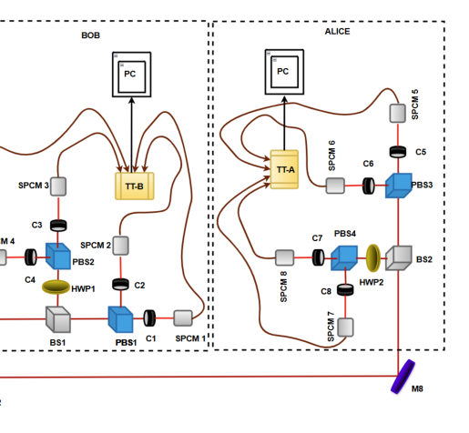
<figcaption class="paper-figure-caption"><b>Fig 3.</b> Fig. 3: Measured performance metrics of the EPS. The brightness (on the left y-axis) and the heralding efficiency (on the right y-axis) of the EPS are plotted against pump power.</figcaption>
</figure>
<figure class="paper-figure-card">
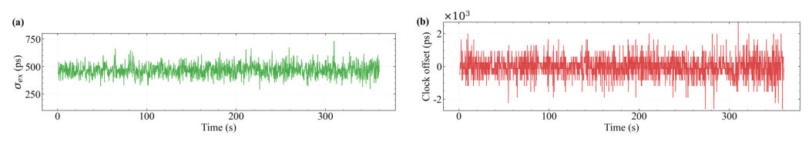
<figcaption class="paper-figure-caption"><b>Fig 4.</b> Fig. 4: Clock synchronization protocol execution for the QKD system over 6 minutes of continuous operation at the satellite channel loss. (a) Experimental system timing jitter σex. (b) Clock offset. (c) Drift rate. (d) Coincidence counts (CC) (events/250 ms)), with a 400 ps coincidence window between Alice and Bob.</figcaption>
</figure>
<figure class="paper-figure-card">
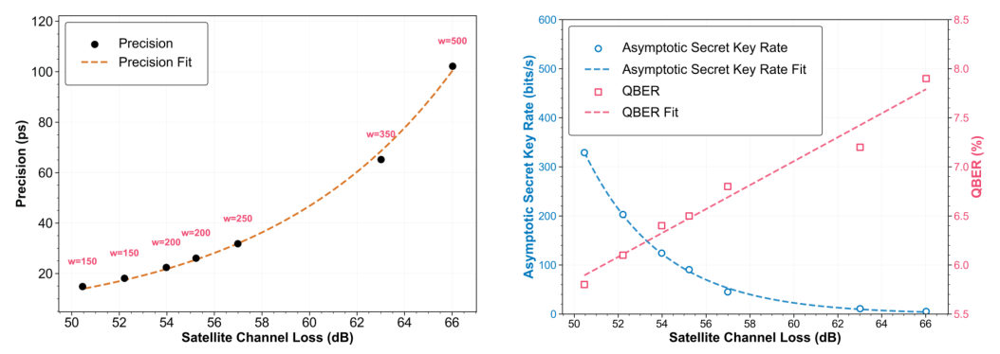
<figcaption class="paper-figure-caption"><b>Fig 5.</b> Fig. 5: Clock synchronization performance of the QKD system under various satellite channel losses. (a) Precision versus satellite channel loss analysis plotted with w values labeled at the top of the scatter points. (b) The asymptotic secret key rate (on the left y axis) and the QBER (on the right y axis) are shown as a function of satellite channel loss.</figcaption>
</figure>
</div>

<p><strong>Summary.</strong> This paper presents an experimental Quantum-Secure Time Transfer (QSTT) system designed for satellite communication. By leveraging entanglement-based photon sources and integrating Quantum Key Distribution (QKD), the system achieves unprecedented key rates and high clock synchronization precision. This advancement establishes a new benchmark for ultra-secure, space-based timing services.</p>
<p><strong>Why it may be interesting.</strong> The work demonstrates advanced quantum networking protocols applied to time synchronization, which is a critical application area for quantum information science, particularly concerning secure communication over long-haul links.</p>
<details>
<summary>Detailed structure</summary>
<p><strong>Main problem.</strong> The primary goal is to establish a highly secure and precise time synchronization method over satellite-to-ground channels, overcoming vulnerabilities and precision limits of classical timing protocols.</p>
<p><strong>Main result.</strong> The developed Quantum-Secure Time Transfer (QSTT) system achieved a QKD key rate of approximately 3 bits s-1, representing a 30-fold increase over state-of-the-art Micius satellite demonstrations.</p>
<p><strong>Method.</strong> The system combines entanglement-based quantum signaling for time transfer with Quantum Key Distribution (QKD) to encrypt time-tag data, incorporating post-quantum security and obfuscation techniques.</p>
<p><strong>Model / system.</strong> The experiment uses an entanglement-based QSTT system emulated in a low Earth orbit channel, utilizing a type-0 Sagnac-based entangled-photon source (EPS) built with a PPKTP crystal.</p>
<p><strong>Key observables.</strong> QKD Key Rate (3 bits s-1), Clock Offset (sub-nanosecond precision), and Timing Jitter ($\sigma_{ex} = 473$ ps).</p>
<p><strong>Important parameters / regimes.</strong> 30-fold increase in QKD key rate vs. Micius; $10^{-10}$ security parameter; $\sim 2$ orders of magnitude increase in EPS rate using type-0 crystal.</p>
<p><strong>Assumptions / limitations.</strong> The protocol assumes the use of QKD keys to seed symmetric encryption (like AES) rather than encrypting all data with a One-Time Pad (OTP) due to rate mismatch.</p>
<p><strong>Figures summary.</strong> Figure 1 illustrates the overall QSTT system schematic, while Figure 2 details the experimental setups for both the EPS and the full QSTT system.</p>
<p><strong>Paper structure.</strong> The paper details the physical setup (EPS using type-0 PPKTP), the QSTT protocol which involves data alignment and fine synchronization, and the security enhancements using QKD and post-quantum cryptography.</p>
</details>
<details>
<summary>Abstract</summary>
<p>We experimentally demonstrate an entanglement-based Quantum-Secure Time Transfer (QSTT) system in an emulated low Earth orbit satellite-to-ground channel using a type-0 Sagnac-based entangled-photon source. Our new QSTT system delivers a finite Quantum Key Distribution (QKD) key rate of approximately $3~$bits$~\text{s}^{-1}$ with a $10^{-10}$ security parameter, providing a $30$-fold increase in the QKD key rate compared to the state-of-the-art entanglement-based QKD system delivered by the Micius satellite. Beyond this high key rate outcome, novel to our QSTT system is a GPS-free clock synchronization, optimized use of QKD, embedded post-quantum security, and obfuscation of the system configuration via use of a pre-shared key. Collectively, these enhancements deliver the most efficient and secure deployment of QSTT to date, and point the way forward to high-accuracy ultra-secure time transfer in space.</p>
</details>
<p><sub><a href="#top">↑ back to top</a></sub></p>

<p><a id="paper-2608.24732"></a></p>
<h3 id="certified-fidelity-susceptibility-from-classical-shadows"><a href="http://arxiv.org/abs/2608.24732v1">Certified Fidelity Susceptibility from Classical Shadows</a></h3>
<p><strong>Authors:</strong> Kiran Adhikari<br>
<strong>Type:</strong> theory · <strong>Category:</strong> statistical mechanics · <strong>PDF:</strong> <a href="https://arxiv.org/pdf/2608.24732v1">https://arxiv.org/pdf/2608.24732v1</a><br>
<strong>Analysis basis:</strong> full PDF text, analyzed in chunks
<strong>Topic relevance:</strong> <code>analog quantum simulation</code> <strong>3/5</strong> · <code>quantum measurements</code> <strong>3/5</strong></p>
<div class="figure-strip-hint">↔ Scroll figures horizontally</div>
<div class="paper-figures-scroll">
<figure class="paper-figure-card">
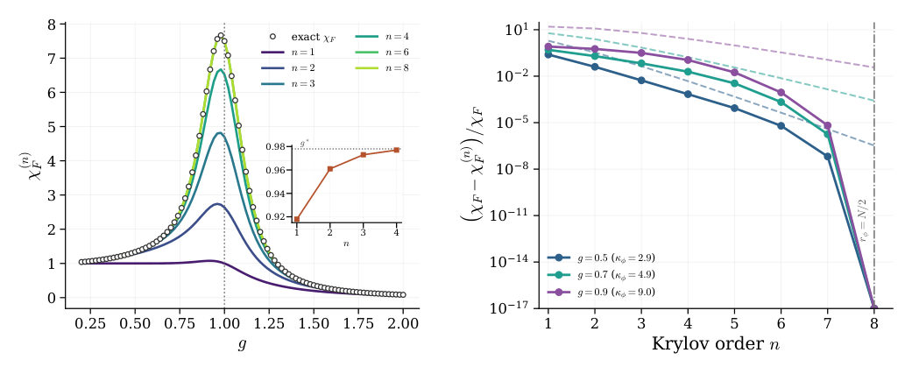
<figcaption class="paper-figure-caption"><b>Fig 1.</b> Figure 1: Monotonic construction for the N = 16 1D TFIM. Left: χ(n) F compared with χF . The inset shows g∗ n approaching g∗= 0.978. Right: relative truncation error versus Krylov order. The errors remain below the geometric bound of Theorem 3 and vanish at n = N/2 = 8, where the Krylov hierarchy terminates.</figcaption>
</figure>
</div>

<p><strong>Summary.</strong> This paper presents a rigorous, resource-efficient method to estimate the fidelity susceptibility ($\chi_F$), a key indicator of quantum phase transitions. It achieves this by reformulating $\chi_F$ as a moment reconstruction problem solvable via Krylov subspace techniques. By coupling this theory with randomized single-copy measurements (classical shadows), the authors provide a statistically certified lower bound on $\chi_F$ suitable for near-term quantum devices.</p>
<p><strong>Why it may be interesting.</strong> This work provides a crucial bridge between theoretical quantum diagnostics ($\chi_F$) and practical, resource-constrained quantum measurements (classical shadows), making it highly relevant for experimental quantum simulation and metrology.</p>
<details>
<summary>Detailed structure</summary>
<p><strong>Main problem.</strong> The paper addresses the challenge of directly measuring the fidelity susceptibility ($\chi_F$), a key diagnostic for quantum phase transitions and metrology, on quantum hardware.</p>
<p><strong>Main result.</strong> It develops a method to certify a lower bound for $\chi_F$ by approximating it using randomized single-copy measurements and Krylov subspace methods.</p>
<p><strong>Method.</strong> The core method involves reformulating $\chi_F$ as a moment problem, approximating it via the Krylov subspace, and then estimating the required moments using classical shadow techniques.</p>
<p><strong>Model / system.</strong> The theory applies to general quantum systems described by a Hamiltonian $H(\lambda)$ with a non-degenerate ground state, often exemplified by models like the 1D Transverse-Field Ising Model.</p>
<p><strong>Key observables.</strong> Fidelity susceptibility ($\chi_F$), linear static susceptibilities ($\chi_O$), and response moments ($M_k$).</p>
<p><strong>Important parameters / regimes.</strong> The convergence rate depends on the response condition number ($\kappa_\phi$), and the required measurement resources scale with the desired accuracy ($\epsilon$) and failure probability ($\delta$).</p>
<p><strong>Assumptions / limitations.</strong> Assumes a finite-dimensional Hilbert space, a non-degenerate ground state, and a spectral gap ($\Delta > 0$). The final bound is an additive, rather than relative, guarantee.</p>
<p><strong>Figures summary.</strong> Figure 1 compares the calculated $\chi^{(n)}_F$ approximations against the exact $\chi_F$ for the 1D TFIM, demonstrating geometric convergence as the Krylov order $n$ increases.</p>
<p><strong>Paper structure.</strong> The paper builds from the definition of $\chi_F$ via resolvent methods, reduces it to a moment reconstruction problem, applies Krylov subspace theory to establish a monotone lower bound hierarchy, and finally uses randomized Pauli measurements (classical shadows) to estimate these moments and certify the bound.</p>
</details>
<details>
<summary>Abstract</summary>
<p>Fidelity susceptibility is a useful probe of quantum phase transitions and quantum metrology, but its direct evaluation on a quantum device is challenging. By integrating Krylov-subspace methods with a resolvent-based reformulation, we present a method for certifying fidelity susceptibility using randomized single-copy measurements across repeated ground-state preparations. The resulting approximations form monotone lower bounds to the exact fidelity susceptibility and converge geometrically. We also present applications to metrology and linear static susceptibilities.</p>
</details>
<p><sub><a href="#top">↑ back to top</a></sub></p>

<p><a id="paper-2608.24514"></a></p>
<h3 id="dynamic-quantum-phase-transitions-in-the-two-leg-creutz-ladder-with-long-range-hopping"><a href="http://arxiv.org/abs/2608.24514v1">Dynamic quantum phase transitions in the two-leg Creutz ladder with long-range hopping</a></h3>
<p><strong>Authors:</strong> J. A. da Silva, J. C. Xavier<br>
<strong>Type:</strong> theory · <strong>Category:</strong> statistical mechanics · <strong>PDF:</strong> <a href="https://arxiv.org/pdf/2608.24514v1">https://arxiv.org/pdf/2608.24514v1</a><br>
<strong>Analysis basis:</strong> full PDF text, analyzed in chunks
<strong>Topic relevance:</strong> <code>non-equilibrium universality</code> <strong>3/5</strong> · <code>Keldysh / 2PI / non-Gaussian methods</code> <strong>1/5</strong> · <code>driven-dissipative phase transition</code> <strong>1/5</strong> · <code>scars &amp; prethermalization</code> <strong>1/5</strong></p>
<div class="figure-strip-hint">↔ Scroll figures horizontally</div>
<div class="paper-figures-scroll">
<figure class="paper-figure-card">
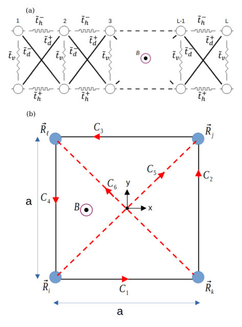
<figcaption class="paper-figure-caption"><b>Fig 1.</b> Figure 1. (a) Representation of the two-leg Creutz ladder with length L and D = 1. The hopping amplitudes in the presence of a uniform perpendicular magnetic field are given by ˜tx,1 ≡˜t± x = e±iθt± x , x = h, d, and ˜tv = tv. Here θ = q</figcaption>
</figure>
<figure class="paper-figure-card">
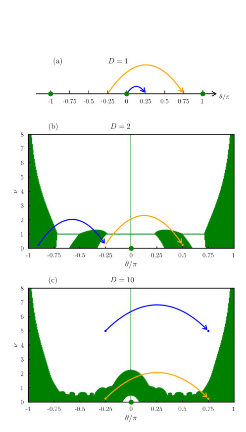
<figcaption class="paper-figure-caption"><b>Fig 2.</b> Figure 2. Critical regions for D = 1, D = 2, and D = 10. In the green region, the gap is zero (critical region), while the white region is gapped. The arrows indicate the quench parameters considered in Figs. 3 and 5.</figcaption>
</figure>
<figure class="paper-figure-card">
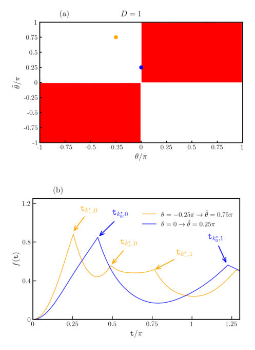
<figcaption class="paper-figure-caption"><b>Fig 3.</b> Figure 3. Results for D = 1. (a) Diagram showing the param- eter region where DQPTs occur (white region) for a quench from θ to ˜θ. In the red region, DQPTs do not occur. The dots in this diagram correspond to the two quench parameters used in (b). (b) The dynamical free energy f(t) vs. t/π for a system of size L = 40000 and two quenches (see legend). The arrows indicate the cusp positions at the critical times tk⋆ ±,m and tk⋆ 0 ,m (see text). The momenta k⋆ ± and k⋆ 0 are given by Eqs. (35) and (36), respectively.</figcaption>
</figure>
<figure class="paper-figure-card">
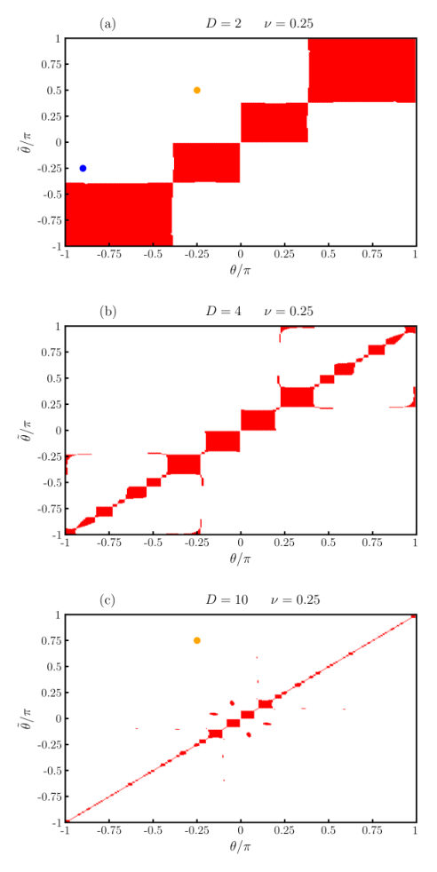
<figcaption class="paper-figure-caption"><b>Fig 4.</b> Figure 4. Parameter region where DQPTs occur (white re- gion) for ν = 0.25; in the red region, DQPTs do not occur. Results for D = 2, D = 4, and D = 10 are presented in (a), (b), and (c), respectively. The dots in (a) and (c) indicate two of the quench parameters considered in Fig. 5 for ν = 0.25.</figcaption>
</figure>
<figure class="paper-figure-card">
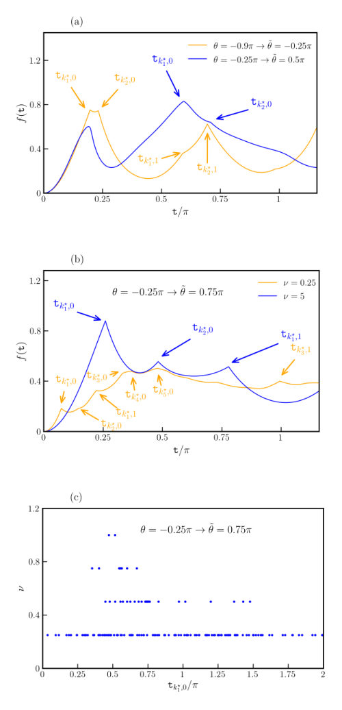
<figcaption class="paper-figure-caption"><b>Fig 5.</b> Figure 5. (a) The dynamical free energy f(t) vs. t/π for a system of size L = 40000 with D = 2 and some quenches (see legend). The arrows indicate the cusp positions at the critical times tk⋆ i ,m (see text). (b) Same as in (a), but for D = 10 and a quench from θ = −0.25π to ˜θ = 0.75π and two values of ν (see legend). (c) The earliest critical time tk⋆ 1 ,0 for some values of ν for a quench from θ = −0.25π to ˜θ = −0.75π with D = 100.</figcaption>
</figure>
</div>

<p><strong>Summary.</strong> This work theoretically investigates Dynamic Quantum Phase Transitions in the two-leg Creutz ladder with long-range hopping. By analyzing the dynamical free energy derived from an exact two-band model solution, the authors determine that the critical times are highly sensitive to the hopping decay exponent ($
u$) and the finite range ($D$). The findings suggest that for certain parameter regimes, the critical dynamics become extremely dense, indicating complex non-equilibrium behavior.</p>
<p><strong>Why it may be interesting.</strong> The connection between long-range interactions, quasi-periodicity, and the emergence of dense critical dynamics is a key topic in non-equilibrium quantum many-body physics, relevant to understanding thermalization and quantum chaos.</p>
<details>
<summary>Detailed structure</summary>
<p><strong>Main problem.</strong> The study investigates Dynamic Quantum Phase Transitions (DQPTs) that occur during quantum quenches in a specific lattice model.</p>
<p><strong>Main result.</strong> The critical times where non-analyticities in the dynamical free energy appear depend on both the long-range hopping exponent (ν) and the finite range (D).</p>
<p><strong>Method.</strong> The analysis involves calculating the Loschmidt amplitude and the dynamical free energy from an exact solution of a generic two-band model in momentum space.</p>
<p><strong>Model / system.</strong> The system is the two-leg Creutz ladder incorporating long-range hopping, modeled as a spinless two-band free-fermion system. The Hamiltonian is analyzed under quantum quenches.</p>
<p><strong>Key observables.</strong> Dynamical free energy f(t), Loschmidt amplitude Z(t), and the location of Yang-Lee-Fisher (YLF) zeros.</p>
<p><strong>Important parameters / regimes.</strong> Long-range hopping exponent (ν), finite range (D), and quench parameters ($ heta,   ilde{   heta}$).</p>
<p><strong>Assumptions / limitations.</strong> The analysis relies on obtaining an exact solution for the generic two-band model in momentum space and identifying non-analyticities where YLF zeros hit the real-time axis.</p>
<p><strong>Figures summary.</strong> Figures illustrate the parameter regions in which DQPTs occur for various values of D and show plots of the dynamical free energy f(t) near critical times.</p>
<p><strong>Paper structure.</strong> The paper first establishes the general theoretical framework by solving the two-band model, deriving expressions for $f(t)$ and YLF zeros. It then applies this framework to the Creutz ladder, analyzing how the critical times and the existence of DQPTs depend on the long-range hopping parameters $
u$ and $D$.</p>
</details>
<details>
<summary>Abstract</summary>
<p>In this work, we investigate quantum quenches in the two-leg Creutz model with long-range hopping, where the hopping amplitudes decay with distance as a power law characterized by an exponent $ν$ and have a finite range $D$. We first obtain the exact solution of a generic two-band model in momentum space. This allows us to compute the Loschmidt amplitude and, consequently, the dynamical free energy $f(\texttt{t})$ of the two-band model. We also show how to determine the Yang-Lee Fisher (YLF) zeros by solving a nonlinear equation. We demonstrate that the two-leg Creutz model in momentum space is a special case of the generic two-band model. Using these results, we identify the non-analyticities in the dynamical free energy $f(\texttt{t})$ at critical times $\texttt{t}_{c}$. We find that the number of nontrivial critical times $N_{s}$ depends on both $ν$ and $D$. In particular, we show that for small $ν$ and large $D$ the critical times become increasingly dense, leading, in the appropriate regime, to non-analyticities at an increasingly dense set of times---similar to what was observed by Xavier and Hoyos [Phys. Rev. B, $\textbf{108}$, 214303 (2023)] in the Su-Schrieffer-Heeger (SSH) model with long-range hopping terms.</p>
</details>
<p><sub><a href="#top">↑ back to top</a></sub></p>

<p><a id="paper-2608.24150"></a></p>
<h3 id="efficient-treatment-of-non-linearity-in-quantum-computational-fluid-dynamics-using-hybrid-tensor-networks"><a href="http://arxiv.org/abs/2608.24150v1">Efficient Treatment of Non-Linearity in Quantum Computational Fluid Dynamics Using Hybrid Tensor Networks</a></h3>
<p><strong>Authors:</strong> Pia Siegl, Nis-Luca van Hülst, Maximilian Mandelt Buxadé, Tomohiro Hashizume, Dieter Jaksch<br>
<strong>Type:</strong> theory · <strong>Category:</strong> numerical methods · <strong>PDF:</strong> <a href="https://arxiv.org/pdf/2608.24150v1">https://arxiv.org/pdf/2608.24150v1</a><br>
<strong>Analysis basis:</strong> full PDF text, analyzed in chunks
<strong>Topic relevance:</strong> <code>methods for driven-dissipative</code> <strong>3/5</strong> · <code>Keldysh / 2PI / non-Gaussian methods</code> <strong>1/5</strong> · <code>analog quantum simulation</code> <strong>1/5</strong> · <code>quantum measurements</code> <strong>1/5</strong></p>
<div class="figure-strip-hint">↔ Scroll figures horizontally</div>
<div class="paper-figures-scroll">
<figure class="paper-figure-card">
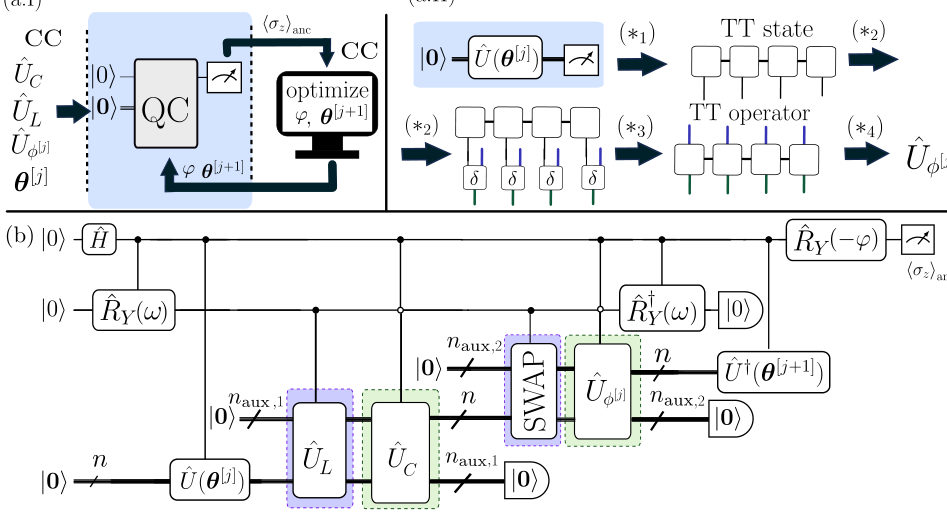
<figcaption class="paper-figure-caption"><b>Fig 1.</b> FIG. 1. (a) Hybrid quantum-classical tensor network algorithm for solving nonlinear PDEs in CFD. The blue box marks operations performed on the quantum computer (QC) while the white areas show quantities stored and operations performed on a classical computer (CC). (a.I) Variational time-stepping loop: the quantum circuit evolves the state using operator unitaries and initial weights from the previous step, while a classical optimizer updates the parameters θ[j+1]</figcaption>
</figure>
<figure class="paper-figure-card">
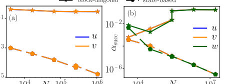
<figcaption class="paper-figure-caption"><b>Fig 2.</b> FIG. 2. Optimal success probabilities αsucc over the number of grid points N. Solid lines with stars denote the diagonal block encoding approach, while dashed lines with pentagons represent the state-based Hadamard prod- uct (a) Success probability for a single Euler time step of the momentum equation for the two velocity components u, v of the two-dimensional TDJ flow and (b) the three ve- locity components u, v, w of the three-dimensional TGV flow. In panels (a) and (b), increasing grid resolution cor- responds to higher Reynolds numbers. Details on the sim- ulation parameters are provided in Appendix C. The suc- cess probabilities of the velocity components u and v are very similar and...</figcaption>
</figure>
<figure class="paper-figure-card">
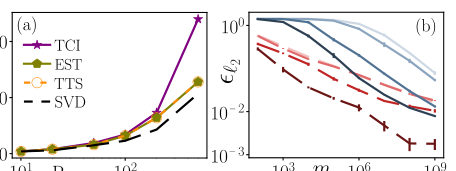
<figcaption class="paper-figure-caption"><b>Fig 3.</b> FIG. 4. Evaluation of the TT-reconstruction techniques for the three-dimensional Taylor–Green vortex. (a) Re- quired bond dimension χ to represent the first compo- nent of the velocity vector u up to the relative ℓ2-error ϵℓ2 ≤0.01 across increasing Reynolds numbers Re. For TCI, χ is chosen such that the mean error over 100 inde- pendent runs satisfies ϵℓ2 ≤0.01. (b) ϵℓ2 over 10 indepen- dent reconstructions as a function of measurement shots m per expectation value, emulating finite-shot sampling noise. Line shades indicate increasing Reynolds number (Re = 10, 20, 50, 100, dark to light) using the EST (red, dashed lines) and the TCI (blue solid lines). Error bars represent the standard...</figcaption>
</figure>
<figure class="paper-figure-card">
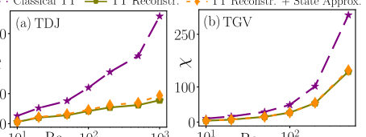
<figcaption class="paper-figure-caption"><b>Fig 4.</b> FIG. 3. Required bond dimensions for evaluating all nonlinear advection terms Ai within a target ℓ2-error ϵℓ2 ≤0.01. We consider three cases: First, Classi- cal TT (deterministic evaluation of the complete nonlin- ear term with TTs using bond dimension χTN), second, TT-Reconstruction(truncation of the prefactor field uk to χbase, reflecting the classical reconstruction step in the hy- brid approach), and third, TT-Reconstruction + Circuit Approx. (truncation of the prefactor field uk to χbase, additionally accounts for finite quantum circuit accuracy by approximating the differentiated field ui in Ai as a TT with χTN + 0.1χTN). The slightly increased bond dimension of the differentiated...</figcaption>
</figure>
<figure class="paper-figure-card">
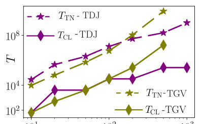
<figcaption class="paper-figure-caption"><b>Fig 5.</b> FIG. 5. Computational cost TTN = χ4 TN of the fully classical tensor network solver and the classical over- head TCL = χ3 ceil of the hybrid solver. We use χceil = 2⌈log2(χbase)⌉and the values of χTN and χbase shown in Fig. 3, with χbase from TT-Reconstruction + Circuit Ap- prox. For the hybrid scheme, the cost of the classical step dominates at high bond dimensions as required in highly turbulent regimes.</figcaption>
</figure>
</div>

<p><strong>Summary.</strong> This paper introduces a novel hybrid quantum-classical algorithm to overcome the major hurdle of nonlinearity in quantum CFD simulations. By using tensor-based block encodings, the method avoids the exponential resource scaling associated with previous state-based approaches. This breakthrough demonstrates a scalable pathway for achieving quantum advantage in simulating complex, high-Reynolds number fluid dynamics.</p>
<p><strong>Why it may be interesting.</strong> While focused on fluid dynamics, the core methodology—using tensor networks and quantum programming to manage complex, non-linear operators—is highly relevant to simulating open quantum systems or many-body dynamics where nonlinear couplings are present.</p>
<details>
<summary>Detailed structure</summary>
<p><strong>Main problem.</strong> The primary challenge addressed is the efficient and scalable implementation of nonlinear terms within Quantum Computational Fluid Dynamics (CFD) simulations.</p>
<p><strong>Main result.</strong> The proposed hybrid quantum-classical tensor network algorithm significantly reduces the computational cost and memory footprint compared to fully classical tensor network solvers, establishing a scalable path toward quantum advantage in CFD.</p>
<p><strong>Method.</strong> The authors propose a hybrid approach combining variational time-stepping with quantum tensor programming. Nonlinearity is handled by replacing state-based encodings with tensor-based block encodings, which are compiled into unitary gates.</p>
<p><strong>Model / system.</strong> The study models Computational Fluid Dynamics (CFD), specifically simulating turbulent flow fields governed by nonlinear Partial Differential Equations (PDEs). Examples include the Temporally Developing Jet (TDJ) and Taylor Green Vortex (TGV).</p>
<p><strong>Key observables.</strong> Success probability of the nonlinear operation ($\alpha_{succ}$), computational cost, memory footprint, and the field representation error ($\epsilon_{\ell_2}$).</p>
<p><strong>Important parameters / regimes.</strong> Reynolds numbers ($Re \in \{10, 20, ..., 1000\}$), bond dimension ($\chi$), and time step ($\Delta t$).</p>
<p><strong>Assumptions / limitations.</strong> The method assumes that the nonlinear terms can be effectively encoded into diagonal block encodings, which stabilizes the success probability against exponential decay with system size.</p>
<p><strong>Figures summary.</strong> Figures illustrate the hybrid algorithm workflow, the quantum circuit decomposition for a single time step (distinguishing linear and nonlinear operators), and comparisons of error scaling and computational costs across various Reynolds numbers.</p>
<p><strong>Paper structure.</strong> The paper details the theoretical framework for handling nonlinear PDEs using a hybrid quantum-classical loop. It then applies this framework to simulate specific turbulent flow examples (TDJ, TGV), providing rigorous error and cost analyses.</p>
</details>
<details>
<summary>Abstract</summary>
<p>Nonlinear terms present a fundamental challenge for quantum computational fluid dynamics, as their implementation on inherently linear quantum hardware typically requires resource-intensive workarounds that limit scalability to large-scale simulations. We present a hybrid quantum-classical tensor network algorithm that addresses this bottleneck by combining variational time-stepping with quantum tensor programming to efficiently compile operators and time-dependent fields into quantum circuits. Within a probabilistic framework, we replace prior state-based nonlinear implementations with tensor-based block encodings, stabilizing success probabilities that otherwise decay exponentially with system size. Benchmarking on turbulent flow fields demonstrates that the algorithm maintains high success probabilities and moderate measurement overhead across increasing Reynolds numbers and grid resolutions. Compared to fully classical tensor network solvers, our hybrid approach yields substantial reductions in both memory footprint and computational cost, establishing a scalable pathway toward practical quantum advantage in scale-resolving CFD simulations.</p>
</details>
<p><sub><a href="#top">↑ back to top</a></sub></p>

<p><a id="paper-2608.24792"></a></p>
<h3 id="kinetic-turnover-in-the-early-stage-nucleation-of-multi-shell-condensed-clusters"><a href="http://arxiv.org/abs/2608.24792v1">Kinetic Turnover in the Early-Stage Nucleation of Multi-Shell Condensed Clusters</a></h3>
<p><strong>Authors:</strong> Kaicheng Zhu, Haibin Su<br>
<strong>Type:</strong> theory · <strong>Category:</strong> statistical mechanics · <strong>PDF:</strong> <a href="https://arxiv.org/pdf/2608.24792v1">https://arxiv.org/pdf/2608.24792v1</a><br>
<strong>Analysis basis:</strong> full PDF text, analyzed in chunks
<strong>Topic relevance:</strong> <code>non-equilibrium universality</code> <strong>3/5</strong> · <code>Keldysh / 2PI / non-Gaussian methods</code> <strong>1/5</strong> · <code>driven-dissipative phase transition</code> <strong>1/5</strong> · <code>methods for driven-dissipative</code> <strong>1/5</strong></p>
<div class="figure-strip-hint">↔ Scroll figures horizontally</div>
<div class="paper-figures-scroll">
<figure class="paper-figure-card">
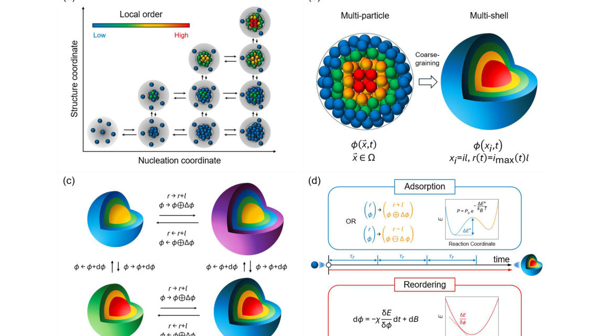
<figcaption class="paper-figure-caption"><b>Fig 1.</b> Figure 1. Overview of the reordering-nucleation process within the multi-shell model. (a) Schematic of the reordering-nucleation pathways projected onto the nucleation and structural coordinates. (b) Representation of the multi-shell model, providing a reduced spatial description of a single condensed cluster where the continuous space domain of the order-parameter field 𝜙(𝑥, 𝑡) is discretized by shell thickness 𝑙 and the cluster radius 𝑟. (c) Reaction mechanisms governing adsorption (horizontal) and reordering (vertical) events. (d) Multiscale dynamics coupling discrete adsorption and continuous reordering events. Adsorption steps occur discretely, separated by a characteristic waiting...</figcaption>
</figure>
<figure class="paper-figure-card">
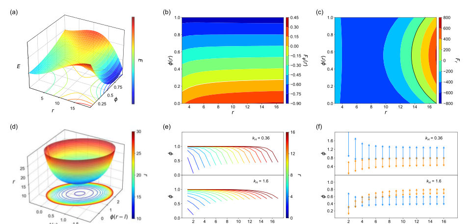
<figcaption class="paper-figure-caption"><b>Fig 2.</b> Figure 2. Overview of the reaction mechanics. (a) Schematic illustration of the 𝐸-energy landscape projected onto the (𝑟, 𝜙) phase space. (b) The (𝑟, 𝜙)-dependent reordering-driving force 𝐹𝜙 acting at the interface when 𝜙(𝑟−𝑙) = (𝜙𝑆+ 𝜙𝐶)/2. (c) The (𝑟, 𝜙)-dependent nucleation-driving force 𝐹𝑟 when 𝜙(𝑟−𝑙) = (𝜙𝑆+ 𝜙𝐶)/2. (d) The critical nucleation regime (𝐹𝑟= 0) represented within the three-dimensional [𝑟, 𝜙(𝑟), 𝜙(𝑟−𝑙)] phase space. 𝑘𝐻 = 0.36 for panels (b), (c), and (d). (e) Size-dependent full-reordered states as a function of cluster radius. (f) Comparison between pro-nucleation states (blue) and full-reordered states (orange); the up triangles denote the corresponding 𝜙(𝑟−𝑙) and the down...</figcaption>
</figure>
<figure class="paper-figure-card">
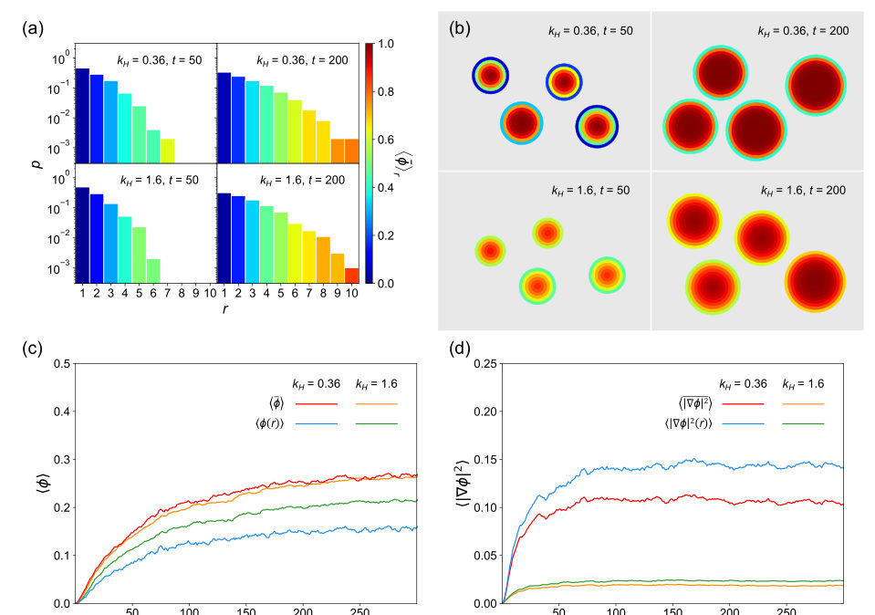
<figcaption class="paper-figure-caption"><b>Fig 3.</b> Figure 3. Overview of early-stage nucleation dynamics. (a) Cluster radius 𝑟 distributions at weak (𝑘𝐻 = 0.36) and strong (𝑘𝐻 = 1.6) couplings, captured at 𝑡 = 50 and 200, respectively. The color scheme indicates the spatially averaged order parameters 〈𝜙̅〉𝑟 corresponding to distinct radius groups. (b) Representative morphological configurations of the condensed clusters, projected onto 2D planes. (c) Time-resolved evolution of the ensemble- averaged order parameters (spatial average 〈𝜙̅〉 and interfacial value 〈𝜙(𝑟)〉). (d) Time-resolved evolution of the ensemble-averaged spatial gradients (spatial average 〈|∇𝜙|2 ̅̅̅̅̅̅̅〉 and interfacial value 〈|∇𝜙|2(𝑟)〉). Here, overlines and angle brackets...</figcaption>
</figure>
<figure class="paper-figure-card">
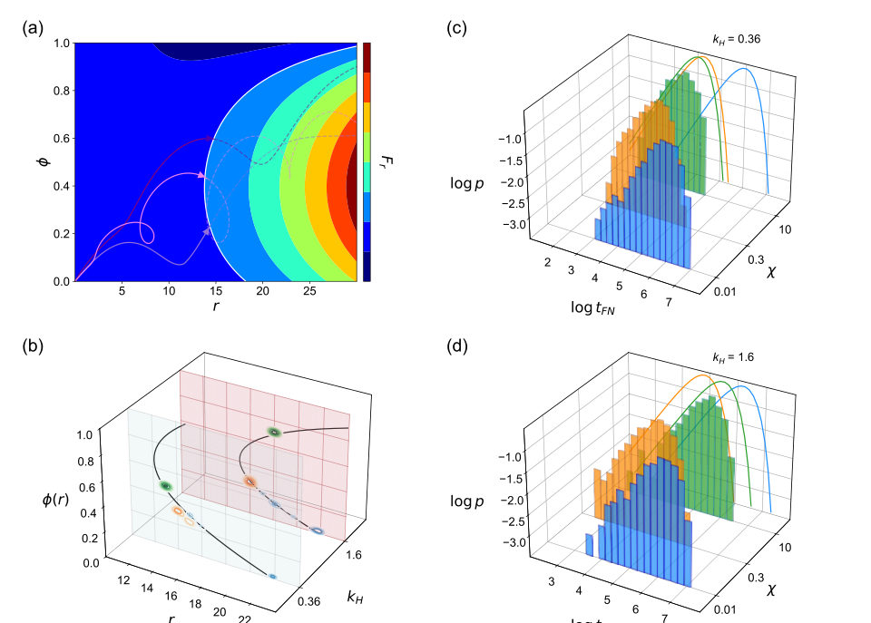
<figcaption class="paper-figure-caption"><b>Fig 4.</b> Figure 4. Overview of the first-passage problem in early-stage nucleation. (a) Scheme of the first-passage paths within the (𝑟, 𝜙) phase space. The solid curves represent the first-passage trajectories from the initial state to the critical nucleation regime, superimposed on a background color map indicating the nucleation-driving force 𝐹𝑟. (b) Joint statistical distributions of the interfacial order parameters 𝜙(𝑟) and cluster radii 𝑟 at the onset of the first critical nucleation events with the reordering susceptibility 𝜒 = 0.01 (blue), 0.3 (orange), and 10 (green), respectively. Black lines serve as a guide to the eye. (c–d) Distributions of the first-passage times resolved under...</figcaption>
</figure>
<figure class="paper-figure-card">
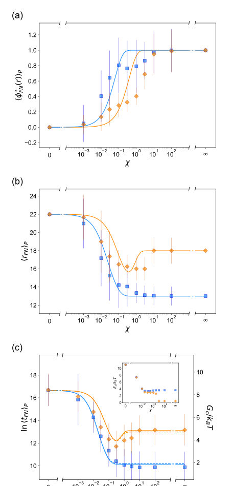
<figcaption class="paper-figure-caption"><b>Fig 5.</b> Figure 5. First-passage properties evaluated across a wide parameter range. The path-averaged (a) relative interfacial order 〈𝜙𝐹𝑁</figcaption>
</figure>
</div>

<p><strong>Summary.</strong> This work develops a multi-shell model to study the kinetics of early-stage nucleation in condensed clusters, explicitly coupling structural reordering dynamics to the growth process. Using stochastic simulations, the authors find that the interplay between these two mechanisms leads to a quantifiable kinetic turnover effect. This provides a predictive framework for understanding multi-step phase transitions beyond classical theories.</p>
<p><strong>Why it may be interesting.</strong> The focus on non-equilibrium kinetics, path-dependence of the free energy barrier, and the explicit coupling of structural dynamics (reordering) to phase separation kinetics is highly relevant to understanding complex many-body transitions.</p>
<details>
<summary>Detailed structure</summary>
<p><strong>Main problem.</strong> The paper addresses the discrepancy between theoretical and experimental nucleation rates, particularly when dynamic structural reordering occurs during multi-step phase transitions.</p>
<p><strong>Main result.</strong> The study demonstrates a kinetic turnover effect where the relationship between mean first-passage time and reordering susceptibility becomes non-monotonic as coupling strength increases.</p>
<p><strong>Method.</strong> The authors use stochastic simulations and path analysis on a multi-shell model to track the time-resolved evolution of structural order during early-stage nucleation.</p>
<p><strong>Model / system.</strong> The system is a multi-shell condensed cluster modeled with a space-time-dependent order-parameter field $\phi(\mathbf{x}, t)$. The energy incorporates interfacial and bulk potentials, explicitly coupling structural reordering with cluster growth.</p>
<p><strong>Key observables.</strong> Nucleation rate, mean first-passage time, reordering susceptibility, and the effective nucleation barrier.</p>
<p><strong>Important parameters / regimes.</strong> Coupling strength ($k_H$), reordering rate, and the structural order parameter $\phi$.</p>
<p><strong>Assumptions / limitations.</strong> The model neglects cluster-cluster coalescence and treats the process in an over-damped limit, focusing only on early-stage nucleation dynamics.</p>
<p><strong>Figures summary.</strong> Figures illustrate the reordering-nucleation process pathways, the energy landscape in $(r, \phi)$ space, and show the path-averaged order parameter, cluster radius, and transition time across varying coupling strengths.</p>
<p><strong>Paper structure.</strong> The paper develops a multi-shell model, details the coupled reordering and adsorption mechanisms, analyzes the first-passage problem using effective barriers, and presents simulations demonstrating the turnover effect.</p>
</details>
<details>
<summary>Abstract</summary>
<p>Nucleation is a key rate-limiting process in phase transition and phase separation. Recent studies highlight a significant discrepancy between experimentally measured nucleation rates and theoretical predictions, particularly when dynamic structural reordering occurs along multi-step pathways. To bridge this gap, we develop a multi-shell model with a space-time-dependent order-parameter field to describe the reordering-nucleation process, where structural reorganization couples with the early growth of condensed clusters. Through stochastic simulations, we track the time-resolved evolution of heterogeneous structural order inside growing clusters. Path analysis of the first-passage problem in early-stage nucleation demonstrates that shifting the reordering rate alters the nucleation rate by several orders of magnitude. Furthermore, as the coupling strength increases, the relationship between the mean first-passage time and reordering susceptibility shifts from monotonic to non-monotonic, exhibiting a turnover effect. We quantitatively rationalize these behaviors with an effective nucleation barrier that accounts for non-equilibrium properties. Our findings elucidate the mechanisms behind multi-step nucleation and offer a predictive framework for future studies.</p>
</details>
<p><sub><a href="#top">↑ back to top</a></sub></p>

<p><a id="paper-2608.24036"></a></p>
<h3 id="stable-rotating-vortex-clusters-in-three-dimensional-quantum-droplets"><a href="http://arxiv.org/abs/2608.24036v1">Stable rotating vortex clusters in three-dimensional quantum droplets</a></h3>
<p><strong>Authors:</strong> Liangwei Dong, Yaroslav V. Kartashov<br>
<strong>Type:</strong> theory · <strong>Category:</strong> quantum gases · <strong>PDF:</strong> <a href="https://arxiv.org/pdf/2608.24036v1">https://arxiv.org/pdf/2608.24036v1</a><br>
<strong>Analysis basis:</strong> full PDF text, analyzed in chunks
<strong>Topic relevance:</strong> <code>analog quantum simulation</code> <strong>3/5</strong> · <code>Keldysh / 2PI / non-Gaussian methods</code> <strong>2/5</strong> · <code>methods for driven-dissipative</code> <strong>1/5</strong></p>
<div class="figure-strip-hint">↔ Scroll figures horizontally</div>
<div class="paper-figures-scroll">
<figure class="paper-figure-card">
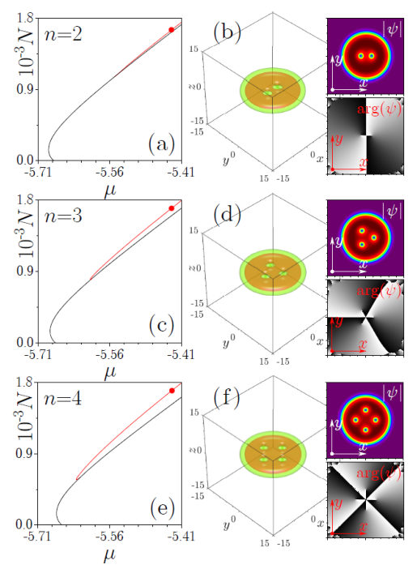
<figcaption class="paper-figure-caption"><b>Fig 1.</b> Fig. 1. Dependence of norm of 3D vortex droplet cluster containing</figcaption>
</figure>
<figure class="paper-figure-card">
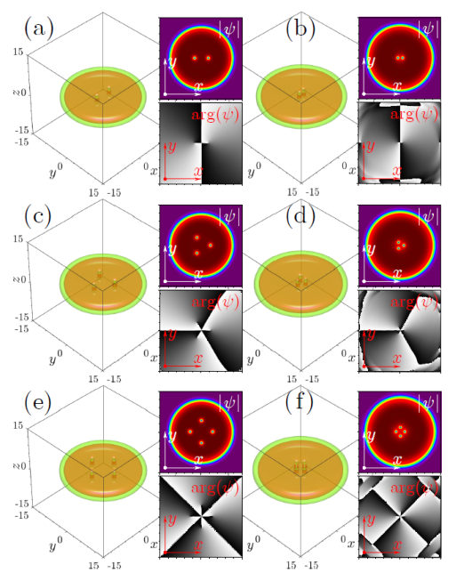
<figcaption class="paper-figure-caption"><b>Fig 2.</b> Fig. 2. Examples of rotating clusters of two (a),(b), three (c),(d), and four (e),(f) vortex droplets at 3.5  . Panels (a),(c),(e) correspond to rotation frequency 0.08  , while panels (b),(d),(f) correspond to 0.50  . Insets show modulus  and phase arg( )  distri- butions in the ( , ) x y plane at 0 z  . The superimposed isosurfaces of  for each state are drawn at 0.2max  (green) and 0.7 max  (orange) levels.</figcaption>
</figure>
<figure class="paper-figure-card">
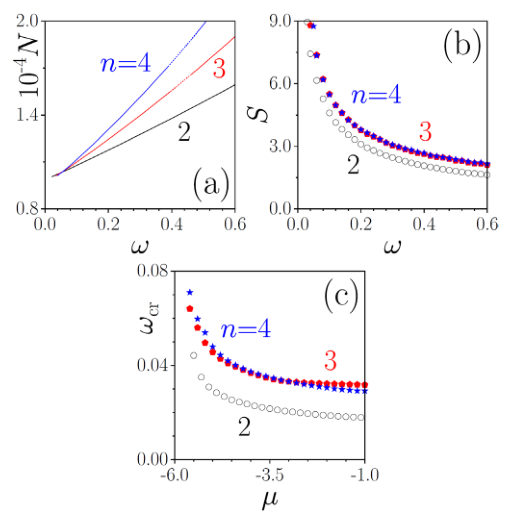
<figcaption class="paper-figure-caption"><b>Fig 3.</b> Fig. 3. (a) Norm N of the vortex droplet clusters with different num- ber of vortices n and (b) the distance S between adjacent phase singularities versus rotation frequency  at 3.5  . In (a) solid</figcaption>
</figure>
<figure class="paper-figure-card">
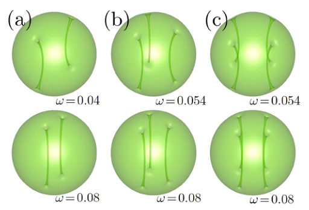
<figcaption class="paper-figure-caption"><b>Fig 4.</b> Fig. 5. Isosurfaces drawn at 0.35max  level showing rotating clusters of two (a), three (b), and four (c) quantum droplets in spher- ical potential at 3.5  and different rotation frequencies.</figcaption>
</figure>
<figure class="paper-figure-card">
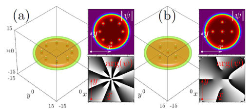
<figcaption class="paper-figure-caption"><b>Fig 5.</b> Fig. 4. Examples of rotating vortex clusters with 8 vortices (а) and with 4 off-center and 1 central vortex (b) at 3.5  , 0.06  .</figcaption>
</figure>
</div>

<p><strong>Summary.</strong> This paper predicts the existence of stable, rotating three-dimensional vortex quantum droplets within binary Bose-Einstein condensates. These clusters are stabilized by a combination of mean-field interactions, quantum fluctuations, and the Coriolis force due to rotation. The findings open theoretical avenues for observing stable, collective motion of multiple vortex lines in ultracold atomic systems.</p>
<p><strong>Why it may be interesting.</strong> This work directly addresses the complex dynamics of interacting quantum fluids, specifically exploring how external forces (rotation) and quantum corrections stabilize exotic topological structures (vortex clusters) in BECs.</p>
<details>
<summary>Detailed structure</summary>
<p><strong>Main problem.</strong> The paper predicts and characterizes stable three-dimensional (3D) vortex quantum droplets formed in binary Bose-Einstein condensates (BEC) that exhibit persistent rotation.</p>
<p><strong>Main result.</strong> Stable vortex clusters, distinct from localized droplets, are found to exist in a wide parameter range, suggesting a route to observing regular collective motion of vortex lines in condensates.</p>
<p><strong>Method.</strong> The study involves solving coupled dimensionless Gross-Pitaevskii equations incorporating Lee-Huang-Yang (LHY) quantum corrections and the Coriolis force arising from rotation.</p>
<p><strong>Model / system.</strong> The system is a binary Bose-Einstein condensate modeled in 3D geometry, analyzed under the influence of mean-field nonlinearity, quantum fluctuations (LHY), rotation, and an external potential.</p>
<p><strong>Key observables.</strong> The norm ($N$) of the cluster, the cluster radius, the distance between adjacent vortices, and the critical rotation frequency ($\omega_{crit}$).</p>
<p><strong>Important parameters / regimes.</strong> Chemical potential ($\mu$), rotation frequency ($\omega$), and the number of vortex lines ($n$).</p>
<p><strong>Assumptions / limitations.</strong> The analysis assumes equal masses and intra-species interactions for simplicity, and the stability is critically dependent on the repulsive LHY quantum corrections balancing the attractive residual mean-field nonlinearity.</p>
<p><strong>Figures summary.</strong> Figure 1 shows the dependence of the cluster norm ($N$) on chemical potential ($\mu$) for 2, 3, and 4 vortex lines, illustrating bifurcation from single-vortex states. Other figures show 3D isosurfaces and stability evolution.</p>
<p><strong>Paper structure.</strong> The paper progresses by establishing the physical model and governing equations, predicting the existence of the new cluster type, analyzing the dependence of cluster properties (size, norm) on rotation frequency and chemical potential, and finally demonstrating stability through numerical simulations.</p>
</details>
<details>
<summary>Abstract</summary>
<p>We predict a new type of stable three-dimensional (3D) vortex quantum droplets in binary Bose-Einstein condensate arranged into ring clusters that per-sistently rotate in the external potential. In contrast to clusters composed from localized quantum droplets, the states introduced here represent interacting vortex lines with identical topological charges nested in common 3D envelope and existing in much broader parameter range in comparison with local-ized quantum droplets. The intricate interplay between mean-field nonlinearity of Bose-Einstein condensate, quantum fluctuations described by Lee-Huang-Yang correction, Coriolis force arising due to rotation, and external potential leads to substantial variations of cluster shape upon increase of its rotation frequency. Rotating vortex clusters bifurcate from single-vortex quantum droplets and exist only above critical value of the rotation frequency that decreases with increase of chemical potential and depends on the number of vortex lines in the cluster. The radius of the cluster decreases with increase of rotation frequency and weakly varies with chemical potential, which determines mostly localization of the individual vortices in cluster and overall width of its envelope. Vortex droplet clusters are very robust objects existing in stable form in wide intervals of the number of particles for any number (odd or even) of vortex lines forming them. Our results may open the route to observation of stable arrays of vortex lines of different configurations per-forming regular collective motion in condensate.</p>
</details>
<p><sub><a href="#top">↑ back to top</a></sub></p>

<p><a id="paper-2608.24613"></a></p>
<h3 id="transport-interpretation-of-entanglement-hamiltonian-cumulants-in-integrable-quantum-quenches"><a href="http://arxiv.org/abs/2608.24613v1">Transport interpretation of entanglement Hamiltonian cumulants in integrable quantum quenches</a></h3>
<p><strong>Authors:</strong> Riccardo Travaglino, Pasquale Calabrese<br>
<strong>Type:</strong> theory · <strong>Category:</strong> statistical mechanics · <strong>PDF:</strong> <a href="https://arxiv.org/pdf/2608.24613v1">https://arxiv.org/pdf/2608.24613v1</a><br>
<strong>Analysis basis:</strong> full PDF text, analyzed in chunks
<strong>Topic relevance:</strong> <code>non-equilibrium universality</code> <strong>3/5</strong> · <code>Keldysh / 2PI / non-Gaussian methods</code> <strong>1/5</strong> · <code>analog quantum simulation</code> <strong>1/5</strong> · <code>scars &amp; prethermalization</code> <strong>1/5</strong></p>
<div class="figure-strip-hint">↔ Scroll figures horizontally</div>
<div class="paper-figures-scroll">
<figure class="paper-figure-card">
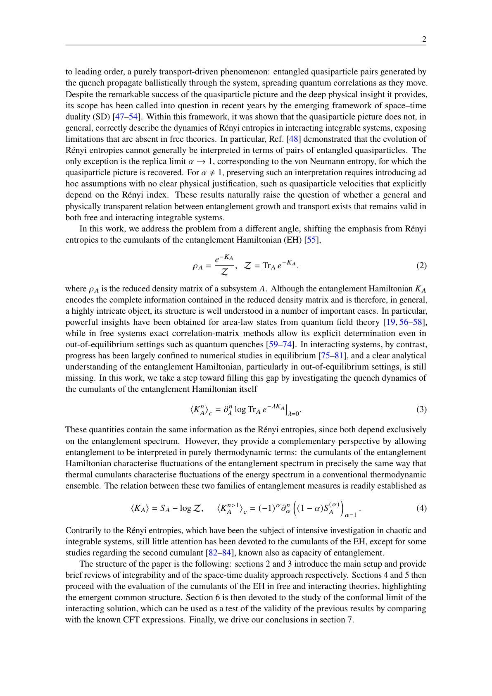
<figcaption class="paper-figure-caption"><b>Fig 1.</b> Low-resolution page preview, page 2</figcaption>
</figure>
<figure class="paper-figure-card">

<figcaption class="paper-figure-caption"><b>Fig 2.</b> Low-resolution page preview, page 3</figcaption>
</figure>
<figure class="paper-figure-card">

<figcaption class="paper-figure-caption"><b>Fig 3.</b> Low-resolution page preview, page 4</figcaption>
</figure>
<figure class="paper-figure-card">

<figcaption class="paper-figure-caption"><b>Fig 4.</b> Low-resolution page preview, page 5</figcaption>
</figure>
<figure class="paper-figure-card">

<figcaption class="paper-figure-caption"><b>Fig 5.</b> Low-resolution page preview, page 6</figcaption>
</figure>
</div>

<p><strong>Summary.</strong> This work connects the complex dynamics of entanglement in integrable quantum systems to fundamental concepts of transport theory. By showing that entanglement Hamiltonian cumulants are determined by conserved current cumulants, it offers a unified, transport-based description applicable across free, conformal, and interacting integrable models. This provides a deeper physical understanding of how entanglement evolves out of equilibrium.</p>
<p><strong>Why it may be interesting.</strong> It provides a powerful, transport-based understanding of entanglement dynamics that complements the standard quasiparticle picture, which is particularly useful for understanding non-equilibrium quantum dynamics in 1D systems.</p>
<details>
<summary>Detailed structure</summary>
<p><strong>Main problem.</strong> The paper aims to establish a direct connection between entanglement dynamics and transport properties in integrable quantum systems following global quantum quenches.</p>
<p><strong>Main result.</strong> The cumulants of the entanglement Hamiltonian are exactly given by the cumulants of currents of suitable conserved charges evaluated in the macrostate selected by the initial state.</p>
<p><strong>Method.</strong> The analysis uses the framework of integrable models, employing techniques like the Thermodynamic Bethe Ansatz (TBA) and space-time duality to relate entanglement measures to conserved charges.</p>
<p><strong>Model / system.</strong> The study focuses on interacting integrable lattice Hamiltonians in (1+1) dimensions, such as the XXZ chain, undergoing global quantum quenches.</p>
<p><strong>Key observables.</strong> Entanglement Hamiltonian cumulants ($\langle K_n^A 
angle_c$), Rényi entropies ($S_\alpha^A$), and conserved current cumulants.</p>
<p><strong>Important parameters / regimes.</strong> The analysis covers the ballistic regime ($t \ll \ell_A$) and the long-time limit ($t \gg \ell_A$), comparing free, conformal, and interacting integrable limits.</p>
<p><strong>Assumptions / limitations.</strong> The analysis relies on the applicability of the TBA framework to describe macrostates via Generalized Gibbs Ensembles (GGE).</p>
<p><strong>Paper structure.</strong> The paper develops the theory by first analyzing the entanglement measures in the context of quenches, showing how the cumulants relate to conserved charges, and then demonstrating the consistency of this picture across different integrable limits.</p>
</details>
<details>
<summary>Abstract</summary>
<p>We study the dynamics of the cumulants of the entanglement Hamiltonian in interacting integrable models following global quantum quenches. Building on recent results based on space-time duality, we show that these cumulants are exactly given by the cumulants of currents of suitable conserved charges evaluated in the macrostate selected by the initial state. This establishes a direct connection between entanglement dynamics and transport, providing a transport counterpart to the quasiparticle picture that successfully describes the evolution of the von Neumann entropy. In the free-fermion and conformal limits, our results reduce to the difference between the current cumulants carried by right- and left-moving excitations, recovering previously known expressions. In interacting integrable models, where a decomposition into independent right and left movers is no longer meaningful at the operator level, a similar structure survives at the level of the entanglement spectrum, yielding a unified description of entanglement Hamiltonian fluctuations across free, conformal, and interacting integrable systems.</p>
</details>
<p><sub><a href="#top">↑ back to top</a></sub></p>

<p><a id="paper-2608.24408"></a></p>
<h3 id="altermagnetic-anomalous-hall-effect-and-spin-edge-locked-chiral-modes-in-a-modified-kane-mele-hubbard-model"><a href="http://arxiv.org/abs/2608.24408v1">Altermagnetic Anomalous Hall Effect and Spin--Edge-Locked Chiral Modes in a Modified Kane--Mele--Hubbard Model</a></h3>
<p><strong>Authors:</strong> Mohsen Hafez-Torbati, Alireza Qaiumzadeh<br>
<strong>Type:</strong> theory · <strong>Category:</strong> strongly correlated electrons · <strong>PDF:</strong> <a href="https://arxiv.org/pdf/2608.24408v1">https://arxiv.org/pdf/2608.24408v1</a><br>
<strong>Analysis basis:</strong> full PDF text, analyzed in chunks
<strong>Topic relevance:</strong> <code>analog quantum simulation</code> <strong>3/5</strong> · <code>Keldysh / 2PI / non-Gaussian methods</code> <strong>2/5</strong></p>
<div class="figure-strip-hint">↔ Scroll figures horizontally</div>
<div class="paper-figures-scroll">
<figure class="paper-figure-card">

<figcaption class="paper-figure-caption"><b>Fig 1.</b> FIG. 1. Honeycomb structure with periodic boundary condition in x and open periodic boundary condition in y direction. The number of sites in y direction is Ny. The zigzag edges at y = 0 and at y = Ny −1 are emboldened. The dashed box denotes the unit cell.</figcaption>
</figure>
<figure class="paper-figure-card">

<figcaption class="paper-figure-caption"><b>Fig 2.</b> FIG. 2. (a) Local magnetization for the z-AF solution (mz) and for the xy-AF solution (mx) versus the Hubbard interaction U. (b) The energy difference between the z-AF solution and the xy-AF solution per lattice site versus U. The blue dashed line displays the mean-field results of the effective low-energy spin model valid at the large-U limit, see the main text. Note that the z-AF solution does not exist below U ≈4.5t and εz denotes the energy per lattice site of the paramagnetic solution instead. The spin-orbit coupling is fixed to λ = 0.1t. The results are for the number of bath sites nb = 6 in the ED impurity solver except for the filled red squares at U = 4t and 10t which are for nb =...</figcaption>
</figure>
<figure class="paper-figure-card">

<figcaption class="paper-figure-caption"><b>Fig 3.</b> FIG. 4. Magnetic phase diagram of the altermagnetic Kane-Mele- Hubbard model in Eq. (1). The horizontal axis represents the elec- tron density n and the vertical axis represents the Hubbard interac- tion U. The paramagnetic, the xy-AF, and the z-AF phases are dis- tinguished. The thin dashed line connects the z-AF phase boundary to its ending point U ≈4.5t at half-filling. The spin-orbit coupling is fixed to λ = 0.1t and the temperature to T = 0.05t. The number of bath sites nb = 6 is used in the ED impurity solver.</figcaption>
</figure>
<figure class="paper-figure-card">

<figcaption class="paper-figure-caption"><b>Fig 4.</b> FIG. 3. (a) Local magnetization for the z-AF solution (mz) and for the xy-AF solution (mx) versus the electron density n for different values of the Hubbard interaction U. (b) The energy difference per lattice site between the z-AF solution and the xy-AF solution versus n for different values of U. The data are obtained for the model parameter λ = 0.1t, the temperature T = 0.05t, and the number of bath sites nb = 6 in the ED impurity solver.</figcaption>
</figure>
<figure class="paper-figure-card">

<figcaption class="paper-figure-caption"><b>Fig 5.</b> FIG. 5. The anomalous Hall conductivity σyx = −σxy for the z-AF solution plotted versus the electron density n at different values of the Hubbard interaction U. The vertical black dashed line for each value of U specifies the electron density above which the system becomes a xy-AF phase. The anomalous Hall conductivity is entirely zero in the xy-AF phase. The spin-orbit coupling is fixed to λ = 0.1t and the temperature to T = 0.05t. The results are for the number of bath sites nb = 6 except for the filled black squares at n = 0.94 and different values of U, which are for nb = 8.</figcaption>
</figure>
</div>

<p><strong>Summary.</strong> This theoretical study uses DMFT on the Kane-Mele-Hubbard model to predict the altermagnetic Anomalous Hall Effect (AHE) in correlated TMD monolayers. The key finding is that doping drives the system into a specific antiferromagnetic phase that breaks necessary symmetries, thereby generating a measurable AHE. This work provides a realistic, correlation-based mechanism for realizing such topological transport phenomena.</p>
<p><strong>Why it may be interesting.</strong> The focus on correlation-driven topological phenomena (AHE) in strongly correlated materials like TMDs provides a rich theoretical playground for understanding emergent quantum states beyond simple band theory.</p>
<details>
<summary>Detailed structure</summary>
<p><strong>Main problem.</strong> The paper establishes a correlation-driven route to the altermagnetic anomalous Hall effect (AHE) and its associated spin--edge-locked edge states.</p>
<p><strong>Main result.</strong> Hole doping induces a spin-flop transition to an out-of-plane Néel-type antiferromagnetic phase, which breaks symmetry and generates a finite AHE, distinct from conventional ferromagnetism.</p>
<p><strong>Method.</strong> The study employs Dynamical Mean-Field Theory (DMFT) to incorporate dynamical electronic correlations into the analysis of the Kane-Mele-Hubbard model.</p>
<p><strong>Model / system.</strong> The system is modeled using a modified Kane-Mele-Hubbard (AKMH) model, applied to transition metal dichalcogenide (TMD) monolayers, incorporating hopping, spin-orbit coupling, and an onsite Hubbard interaction.</p>
<p><strong>Key observables.</strong> Anomalous Hall conductivity (sigma_xy), magnetic phases (paramagnetic, xy-AF, z-AF), and spin--edge-locked chiral edge states.</p>
<p><strong>Important parameters / regimes.</strong> Hubbard interaction strength (U), electron doping level (n), and spin-orbit coupling (lambda).</p>
<p><strong>Assumptions / limitations.</strong> The DMFT approximation is used, which neglects nonlocal quantum fluctuations; the analysis contrasts results derived from spin-rotationally invariant interactions versus Ising-like ones.</p>
<p><strong>Figures summary.</strong> Figures illustrate the honeycomb structure, the evolution of local magnetization and energy differences across magnetic transitions, and momentum-resolved spectral functions showing edge-localized modes.</p>
<p><strong>Paper structure.</strong> The work systematically analyzes the system's behavior by varying the Hubbard interaction (U) and doping level (n). It first establishes the transition from a paramagnetic to an antiferromagnetic phase, then details how doping drives the system into the symmetry-breaking z-AF phase, which is responsible for the measurable AHE.</p>
</details>
<details>
<summary>Abstract</summary>
<p>We establish a correlation-driven route to the altermagnetic anomalous Hall effect (AHE) and its associated \emph{spin--edge-locked} edge states in a modified Kane--Mele--Hubbard model. Using dynamical mean-field theory (DMFT), we show that, at half-filling, increasing the Hubbard interaction drives the system from a metallic paramagnetic phase hosting antichiral edge states into an insulating in-plane Néel-type antiferromagnetic phase, in which a residual antiunitary symmetry forbids the AHE. Hole doping induces a spin-flop transition to an out-of-plane Néel-type antiferromagnetic phase, thereby breaking this symmetry and generating a finite anomalous Hall conductivity that persists into the strongly correlated regime. Distinct from a conventional spin-polarized Hall response in ferromagnets, the altermagnetic AHE receives equal and additive contributions from the two symmetry-related spin sectors and is accompanied by spin--edge-locked chiral states. Our results demonstrate that carrier doping and spin-rotationally invariant Hubbard interactions are sufficient to realize the altermagnetic AHE, without invoking an explicitly Ising-like interaction, and provide a realistic microscopic route toward its realization in correlated transition metal dichalcogenides monolayers.</p>
</details>
<p><sub><a href="#top">↑ back to top</a></sub></p>

<p><a id="paper-2608.24587"></a></p>
<h3 id="disorder-tuned-crossing-of-monopole-and-conventional-pairing-instabilities-in-multi-weyl-semimetals"><a href="http://arxiv.org/abs/2608.24587v1">Disorder-tuned crossing of monopole and conventional pairing instabilities in multi-Weyl semimetals</a></h3>
<p><strong>Authors:</strong> Enrique Muñoz, Rodrigo Soto-Garrido<br>
<strong>Type:</strong> theory · <strong>Category:</strong> disordered systems and neural networks · <strong>PDF:</strong> <a href="https://arxiv.org/pdf/2608.24587v1">https://arxiv.org/pdf/2608.24587v1</a><br>
<strong>Analysis basis:</strong> full PDF text, analyzed in chunks
<strong>Topic relevance:</strong> <code>Keldysh / 2PI / non-Gaussian methods</code> <strong>3/5</strong> · <code>driven-dissipative phase transition</code> <strong>1/5</strong> · <code>methods for driven-dissipative</code> <strong>1/5</strong></p>
<div class="figure-strip-hint">↔ Scroll figures horizontally</div>
<div class="paper-figures-scroll">
<figure class="paper-figure-card">

<figcaption class="paper-figure-caption"><b>Fig 1.</b> FIG. 1. Crossing criterion for general channel protection, clean ratio r = T (s) c0 /T (m) c0 = 0.625. (a)</figcaption>
</figure>
<figure class="paper-figure-card">

<figcaption class="paper-figure-caption"><b>Fig 2.</b> FIG. 2. Clean nodal thermodynamics of the monopole channel. (a) Quasiparticle density of states</figcaption>
</figure>
<figure class="paper-figure-card">

<figcaption class="paper-figure-caption"><b>Fig 3.</b> FIG. 3. Residual zero-energy DOS N(0)/N0 = Γ0/ΓN from the angle-resolved Born self-consistency</figcaption>
</figure>
<figure class="paper-figure-card">

<figcaption class="paper-figure-caption"><b>Fig 4.</b> FIG. 4. The two pure-state gap structures, shown side by side with no disorder axis so that no</figcaption>
</figure>
<figure class="paper-figure-card">

<figcaption class="paper-figure-caption"><b>Fig 5.</b> FIG. 5. Instability crossing in the universal variable ΓN/T (m) c0 (primary presentation). Solid:</figcaption>
</figure>
</div>

<p><strong>Summary.</strong> This theoretical work examines how non-magnetic disorder modifies the superconducting pairing mechanism in multi-Weyl semimetals. It finds that disorder tunes the system's instability from a topologically protected monopole state to a conventional s-wave state. The analysis relies on advanced diagrammatic techniques and reveals quantitative criteria for the survival of this superconducting phase transition in the presence of impurities.</p>
<p><strong>Why it may be interesting.</strong> The study of pairing instabilities in topological semimetals under disorder is highly relevant to understanding superconductivity in novel quantum materials, which often exhibit strong coupling to topological features.</p>
<details>
<summary>Detailed structure</summary>
<p><strong>Main problem.</strong> The paper investigates how non-magnetic impurity scattering tunes the pairing instability in a multi-Weyl semimetal, specifically analyzing the crossing between a topologically nontrivial monopole pairing channel and a conventional s-wave channel.</p>
<p><strong>Main result.</strong> Disorder drives the pairing instability from the monopole to the conventional channel, and the crossing point is determined by disorder-dependent protection factors ($\eta_m, \eta_s$).</p>
<p><strong>Method.</strong> The analysis uses Born and Abrikosov–Gor'kov theory, calculating self-energies and applying continuum Ginzburg-Landau estimates to study the competition between the two pairing instabilities.</p>
<p><strong>Model / system.</strong> The system is a two-node multi-Weyl semimetal characterized by opposite chirality at $\pm Q$ and a monopole charge $J$. The low-energy physics is described by a Hamiltonian involving pseudospin and orbital degrees of freedom.</p>
<p><strong>Key observables.</strong> Pairing instability channels (monopole vs. s-wave), crossing criterion $rac{1 - \eta_s}{1 - \eta_m} &lt; rac{T_c^{(0)}}{T_m^{(0)}}$, and the pair-breaking rates ($\Gamma_N, \Gamma_m$).</p>
<p><strong>Important parameters / regimes.</strong> The disorder strength is characterized by the small-pocket window $q_{\max} 	ext{intra}\xi_{	ext{dis}} \ll 1 \ll |2Q|\xi_{	ext{dis}}$, and the monopole protection factor $\eta_m(J) = 1/(J+2)$.</p>
<p><strong>Assumptions / limitations.</strong> The analysis assumes an explicitly specified projected impurity kernel, treating disorder as valley-diagonal and momentum-independent within each Fermi pocket.</p>
<p><strong>Figures summary.</strong> Figure 6 compares the coupled (red) versus decoupled (blue) crossing instability for $J=2$ and $J=3$, showing the persistence of the crossing under disorder broadening.</p>
<p><strong>Paper structure.</strong> The paper progresses by first establishing the low-energy model and the two competing pairing channels. It then calculates the disorder-induced pair-breaking rates for both channels using AG theory. Finally, it analyzes the crossing condition using both continuum Ginzburg-Landau estimates and coupled Lorentzian-DOS-plus-AG tests.</p>
</details>
<details>
<summary>Abstract</summary>
<p>We study how non-magnetic impurity scattering affects the emergence and possible coexistence of pairing instabilities in a two-node multi-Weyl semimetal. Within an explicitly specified projected impurity kernel---valley diagonal and momentum independent across each Fermi pocket, the leading behaviour of non-magnetic disorder in the small-pocket window $q^{\max}_{\rm intra}ξ_{\rm dis}\ll1\ll|2\mathbf Q|ξ_{\rm dis}$, treated at leading order in Born and Abrikosov--Gor'kov theory---quenched disorder tunes the leading pairing instability from a topologically nontrivial monopole channel to a conventional ($s$-wave) one, extending our earlier clean-system analysis into the disordered regime. A Born self-energy calculation in the chiral band basis then gives: (i) a band-isotropic conventional channel that is Anderson protected against intra-node scalar disorder ($η_s=1$), introduced phenomenologically at the projected-band level; solving the competition for arbitrary $η_s$ yields the crossing criterion $(1-η_s)/(1-η_m)<T_{c0}^{(s)}/T_{c0}^{(m)}$, so the mechanism tolerates substantial loss of conventional-channel protection; and (ii) a rank-one monopole sector fixing $f_m$ as the exact eigenfunction with $η_m(J)=1/(J+2)$, exact given that kernel. The crossing location in $Γ_N/T_{c0}^{(m)}$ is set by $η_m(J)$, $η_s$, and $r=T_{c0}^{(s)}/T_{c0}^{(m)}$. From the clean projected BdG Hamiltonian the pure monopole nodes carry Berry charge $\pm J$, distinct from the gapped conventional solution; the clean nodal thermodynamics is charge-dependent, $N_{\rm SC}(E)\propto E^{2/J}$ and $C\propto T^{1+2/J}$, and the residual density of states shows a threshold only for $J=1$. The crossing lies in the moderately metallic regime, $μ/Γ_N\simeq11$--$14$ for the illustrative $T_{c0}^{(m)}/μ=0.133$ used in the figures.</p>
</details>
<p><sub><a href="#top">↑ back to top</a></sub></p>

<p><a id="paper-2608.24383"></a></p>
<h3 id="emergence-of-stigmergic-transport-in-granular-environments"><a href="http://arxiv.org/abs/2608.24383v1">Emergence of Stigmergic Transport in Granular Environments</a></h3>
<p><strong>Authors:</strong> F. Wéry, F. N. Pinan Basualdo, B. Gorissen, N. Vandewalle<br>
<strong>Type:</strong> both · <strong>Category:</strong> statistical mechanics · <strong>PDF:</strong> <a href="https://arxiv.org/pdf/2608.24383v1">https://arxiv.org/pdf/2608.24383v1</a><br>
<strong>Analysis basis:</strong> full PDF text, analyzed in chunks
<strong>Topic relevance:</strong> <code>non-equilibrium universality</code> <strong>3/5</strong> · <code>Frenkel-Kontorova</code> <strong>1/5</strong> · <code>driven-dissipative phase transition</code> <strong>1/5</strong></p>
<div class="figure-strip-hint">↔ Scroll figures horizontally</div>
<div class="paper-figures-scroll">
<figure class="paper-figure-card">

<figcaption class="paper-figure-caption"><b>Fig 1.</b> FIG. 1. A bristlebot (GRASPion, [20]) is forming traces by pushing cubic wood blocks in an arena. Light comes from below.</figcaption>
</figure>
<figure class="paper-figure-card">

<figcaption class="paper-figure-caption"><b>Fig 2.</b> FIG. 2. Main experimental results for three packing fractions, shown from left to right: ϕ = 0.2, ϕ = 0.4, and ϕ = 0.6. (top row) Images of the arena, emphasizing particle organization and trail formation at intermediate/high ϕ. (second row) Tra- jectories of the robot, with time indicated by the color scale. Duration tf −t0 is 12 min (low ϕ) and 20 min otherwise. Traces reveal multiple passages at intermediate/high ϕ. (bot- tom row) Probability Density Functions (PDF) of the local packing fraction ϕi when a 30 × 30 grid is considered on im- ages. Blue curves correspond to the initial state t0, while green curves correspond to the final state tf.</figcaption>
</figure>
<figure class="paper-figure-card">

<figcaption class="paper-figure-caption"><b>Fig 3.</b> FIG. 3. Main numerical results for three packing fractions, shown from left to right: ϕ = 0.2, ϕ = 0.4, and ϕ = 0.6. First row: Images of the system at the three packing fractions. Sec- ond row: Trajectories of the robot, with time indicated by a color scale. Third row: Probability Density Functions (PDF) of the local packing fraction ϕi. Violet curves correspond to the initial state, while orange curves correspond to the final state.</figcaption>
</figure>
<figure class="paper-figure-card">

<figcaption class="paper-figure-caption"><b>Fig 4.</b> FIG. 5. Memory order parameter m, defined in Eq. (4), as a function of the packing fraction ϕ. The sharp increase at ϕc, denoted by a dashed vertical line, identifies the onset of stig- mergic path formation in both experiments and simulations.</figcaption>
</figure>
<figure class="paper-figure-card">

<figcaption class="paper-figure-caption"><b>Fig 5.</b> FIG. 4. Speed and mobility of bot/walker in both experiments (left column) and simulations (right column). Critical points are denoted by vertical dashed lines. Speed vanishes to zero at ϕexp J ≈0.65 in experiments. Mean displacement per iteration δ reaches zero at ϕnum J ≈0.85 in simulations. Mobility µexp</figcaption>
</figure>
</div>

<p><strong>Summary.</strong> This paper demonstrates that active agents can collectively build robust transport networks in granular media through stigmergic interactions. By coupling movement to environmental remodeling, the system exhibits enhanced mobility in an optimal regime that exists well below the jamming limit. The findings provide a general framework for understanding self-organized transport in complex, deformable substrates.</p>
<p><strong>Why it may be interesting.</strong> The concept of self-organization driven by mechanical interactions and environmental memory is highly relevant to non-equilibrium statistical mechanics, pattern formation, and active matter systems.</p>
<details>
<summary>Detailed structure</summary>
<p><strong>Main problem.</strong> The paper investigates the emergence of stigmergic transport—self-organized movement pathways—in deformable, granular environments.</p>
<p><strong>Main result.</strong> Stigmergic transport emerges only above a critical packing fraction ($\phi_c$), leading to enhanced mobility, but this enhancement is suppressed as the system approaches the jamming transition ($\phi_J$).</p>
<p><strong>Method.</strong> The study combines physical experiments using robotic walkers in granular media with a minimal stochastic simulation model.</p>
<p><strong>Model / system.</strong> The system involves active agents (robotic walkers) moving through a deformable substrate of granular material (wooden cubes). The model tracks how movement modifies the local packing fraction ($\phi_i$) of the environment.</p>
<p><strong>Key observables.</strong> Average velocity ($\langle v 
angle$), normalized mobility ($\mu$), and a memory order parameter ($m$) quantifying environmental structuring.</p>
<p><strong>Important parameters / regimes.</strong> Packing fraction ($\phi$), critical packing fraction ($\phi_c$), and the jamming transition ($\phi_J$).</p>
<p><strong>Assumptions / limitations.</strong> The model assumes material displacement is redistributed isotropically among neighbors, allowing for the persistence of depleted regions.</p>
<p><strong>Figures summary.</strong> Figures illustrate the formation of particle traces and robot trajectories at different packing fractions, and plots show the evolution of mobility and the memory order parameter across the different transport regimes.</p>
<p><strong>Paper structure.</strong> The work establishes the physical system, defines the competition between environmental memory and geometrical crowding, demonstrates the emergence of three regimes (random, trail formation, narrow path), and quantifies the optimal transport regime before jamming.</p>
</details>
<details>
<summary>Abstract</summary>
<p>We show that stigmergic path formation emerges in a deformable environment through the interplay between environmental memory and geometrical crowding. Using experiments with robotic random walkers together with a minimal stochastic model, we demonstrate the onset of persistent self-reinforced transport pathways above a critical packing fraction $φ_c$, where environmental memory enhances walker mobility. As the jamming transition $φ_J$ is approached, increasing crowding progressively suppresses this transport enhancement despite the persistence of environmental memory. The resulting non-monotonic behavior reveals an optimal transport regime well below jamming. More generally, our work establishes how active agents can collectively build transport networks through purely mechanical interactions with a deformable substrate.</p>
</details>
<p><sub><a href="#top">↑ back to top</a></sub></p>

<p><a id="paper-2608.24628"></a></p>
<h3 id="long-range-order-and-composite-boson-condensation-in-lattice-quantum-hall-states"><a href="http://arxiv.org/abs/2608.24628v1">Long-Range Order and Composite Boson Condensation in Lattice Quantum Hall States</a></h3>
<p><strong>Authors:</strong> Fabian J. Pauw, Nathan Goldman, Felix A. Palm<br>
<strong>Type:</strong> theory · <strong>Category:</strong> other · <strong>PDF:</strong> <a href="https://arxiv.org/pdf/2608.24628v1">https://arxiv.org/pdf/2608.24628v1</a><br>
<strong>Analysis basis:</strong> full PDF text, analyzed in chunks
<strong>Topic relevance:</strong> <code>analog quantum simulation</code> <strong>3/5</strong> · <code>methods for driven-dissipative</code> <strong>2/5</strong></p>
<div class="figure-strip-hint">↔ Scroll figures horizontally</div>
<div class="paper-figures-scroll">
<figure class="paper-figure-card">

<figcaption class="paper-figure-caption"><b>Fig 1.</b> FIG. 1. (a) Sketch of the square-lattice interacting Hof- stadter model with on-site (Hubbard) repulsion U (bosons) or nearest-neighbor repulsion V (fermions). (b) In the topo- logical phase at filling factor ν = 1/m (here, m = 2), both Read’s quasihole mapping (upper panel) and Girvin and Mac- Donald’s (GM) flux attachment (lower panel) yield composite bosons (mCBs). (c) While the correlations of the bare parti- cles decay rapidly with distance r (blue), GM’s CBs exhibit algebraic quasi long-range order (green), while Read’s CBs exhibit true long-range order (red). (d) In the bulk, we define a nonlocal order parameter Φ(R), resolving phase transitions between trivial and topological phases.</figcaption>
</figure>
<figure class="paper-figure-card">

<figcaption class="paper-figure-caption"><b>Fig 2.</b> FIG. 2. Averaged two-point correlations Φ(R) [Eq. (9)] of Read-type CBs in the bulk of a non-interacting Chern insu- lator at ν = 1 for a system of size L × L = 10 × 10. The particle number is varied with α to keep the filling factor constant. The dashed line corresponds to the continuum pre- diction of the long-range behavior of the Read-CB correlator, limr→∞ρ(R)(r)=α. For small flux α≤0.2 we find long-range order, ΦR ≈¯n=α, whereas with increasing lattice effects the long-range correlations fade away.</figcaption>
</figure>
<figure class="paper-figure-card">

<figcaption class="paper-figure-caption"><b>Fig 3.</b> FIG. 3. (a) Two-point correlation functions ρ(·)(r) of bare particles, Read (R), and Girvin-MacDonald (GM) CBs versus Euclidean distance r/ℓB. Columns display a noninteracting Chern insulator (left, N =13), a bosonic 1/2-Laughlin state (center, N = 6), and a fermionic 1/3-Laughlin state (right, N = 4). The numerical data agrees well with the continuum predictions (dashed lines): true long-range correlations for the Read-CBs (ρ(R)(r) ≈¯n = α/m [Eq. (6)]; red) and an algebraic decay for GM-CBs (ρ(GM)(r) ∝r−m/2 [Eq. (8)]; green). (b) This behavior is further confirmed by the particle-number scaling of the leading eigenvalue λ(·) 0 of the two-point correlation matrix for the states in (a),...</figcaption>
</figure>
</div>

<p><strong>Summary.</strong> This paper develops a method using tensor networks to directly observe the condensation of composite bosons in lattice quantum Hall states. By calculating nonlocal correlation functions, the authors confirm the existence of true long-range topological order. This provides a powerful, measurable diagnostic tool ($\Phi(R)$) to map out quantum phase transitions in these exotic quantum materials.</p>
<p><strong>Why it may be interesting.</strong> The explicit connection between topological order, nonlocal correlation functions, and measurable local measurements (via quantum simulators) provides a concrete, testable framework for understanding exotic quantum matter beyond traditional solid-state theory.</p>
<details>
<summary>Detailed structure</summary>
<p><strong>Main problem.</strong> The paper aims to microscopically confirm the condensation of nonlocal composite bosons (CBs) that characterize the topological order in lattice quantum Hall (QH) states, and to define a nonlocal order parameter for phase transition detection.</p>
<p><strong>Main result.</strong> Genuine long-range order is established in lattice QH states via CB condensation, and a nonlocal order parameter successfully pinpoints quantum phase transitions between trivial and topological regimes.</p>
<p><strong>Method.</strong> The study employs tensor-network methods, specifically DMRG, to find ground states and calculate nonlocal correlation functions involving composite operators (Read-CBs and GM-CBs).</p>
<p><strong>Model / system.</strong> The system is modeled using lattice Hamiltonians for Quantum Hall states, including bosonic and fermionic Laughlin states, implemented on a lattice structure (e.g., Harper-Hofstadter model).</p>
<p><strong>Key observables.</strong> Read-CB correlation function ($
ho_R$), GM-CB correlation function ($
ho_{GM}$), and the nonlocal order parameter $\Phi(R)$.</p>
<p><strong>Important parameters / regimes.</strong> Flux per plaquette ($\alpha$), filling factor ($
u$), and interaction strengths ($U/t$ or $V/t$).</p>
<p><strong>Assumptions / limitations.</strong> The analysis is currently limited to single-component, Abelian quantum Hall states and relies on the applicability of tensor network methods to reconstruct nonlocal operators.</p>
<p><strong>Figures summary.</strong> Figures illustrate the correlation functions ($
ho(\cdot)$) for different states and show the evolution of the normalized order parameter $\Phi(R)/ar{n}$ across phase transitions as a function of interaction strength.</p>
<p><strong>Paper structure.</strong> The work progresses from defining the problem (topological order in QH states) to applying advanced numerical techniques (DMRG/MPS) to calculate nonlocal correlators. It then demonstrates the emergence of long-range order and uses the derived order parameter to map out phase boundaries.</p>
</details>
<details>
<summary>Abstract</summary>
<p>Topological states of matter, such as quantum Hall states, are characterized by the absence of local order parameters. In the continuum, their topological order has been reinterpreted as the condensation of nonlocal composite bosons, but this condensation and the resulting long-range correlations have so far eluded direct confirmation beyond the simplest trial states. Here, we apply tensor-network methods to lattice Hamiltonians hosting quantum Hall states, revealing this exotic order directly in interacting ground states and demonstrating both the long-range correlations and the condensation of composite bosons. These correlations define a nonlocal order parameter that identifies phase transitions between trivial and topological phases, for both bosonic and fermionic models. The corresponding operators are accessible through site-resolved, local measurements on an extensive number of particles, making them directly probable in quantum simulators. Our work opens new avenues for microscopic studies of topological quantum matter beyond the reach of traditional solid-state approaches.</p>
</details>
<p><sub><a href="#top">↑ back to top</a></sub></p>

<p><a id="paper-2608.24147"></a></p>
<h3 id="phase-controlled-perfect-nonlocal-spin-and-charge-diode-effects-in-a-four-terminal-josephson-junction-with-math337math-wave-magnets"><a href="http://arxiv.org/abs/2608.24147v1">Phase-controlled perfect nonlocal spin and charge diode effects in a four-terminal Josephson junction with $p$-wave magnets</a></h3>
<p><strong>Authors:</strong> Lovy Sharma, Bimal Ghimire, Manisha Thakurathi<br>
<strong>Type:</strong> theory · <strong>Category:</strong> other · <strong>PDF:</strong> <a href="https://arxiv.org/pdf/2608.24147v1">https://arxiv.org/pdf/2608.24147v1</a><br>
<strong>Analysis basis:</strong> full PDF text, analyzed in chunks
<strong>Topic relevance:</strong> <code>Keldysh / 2PI / non-Gaussian methods</code> <strong>3/5</strong> · <code>methods for driven-dissipative</code> <strong>2/5</strong></p>
<div class="figure-strip-hint">↔ Scroll figures horizontally</div>
<div class="paper-figures-scroll">
<figure class="paper-figure-card">

<figcaption class="paper-figure-caption"><b>Fig 1.</b> FIG. 1: Schematic illustration of our four-terminal model, where the barrier region is NM coupled to four semi-infinite leads at the top, bottom, left, and right. The left and right leads host proximity-induced s-wave superconductivity in PM, while the top and bottom leads are py-wave SCs.</figcaption>
</figure>
<figure class="paper-figure-card">

<figcaption class="paper-figure-caption"><b>Fig 2.</b> FIG. 2: Transverse (a) spin current, Is t (b) charge current, Ic t as functions of the longitudinal phase differ- ence ϕl for crystallographic orientations α = 0.2π (blue), α = 0.3π (orange), and α = 0.4π (green). The calcula- tions are performed for ϕt = 0, VG = 0, tl = tt = t0, µ = 2t0, t0 = 1 tj = 0.5t0, ∆s = 0.005t0, ∆p = 0.05t0, Jsd = 0.2t0, and Nx = Ny = 5.</figcaption>
</figure>
<figure class="paper-figure-card">

<figcaption class="paper-figure-caption"><b>Fig 3.</b> FIG. 3: SDE ηs, as function of (a) gate potential, VG at ϕt = 0 and α = 0.2π and (b) lobe angle of PM, α at VG = 0 and ϕt = 0 . The insets display maximum (red) and minimum (green) current as a function of VG and α, respectively in the entire range of ϕl. The identical sign of the maximum and minimum current values for every VG and α results in a perfect 100% diode efficiency. Other system parameters are same as used in Fig [2].</figcaption>
</figure>
<figure class="paper-figure-card">

<figcaption class="paper-figure-caption"><b>Fig 4.</b> FIG. 4: Contour plots of the SDE and CDE, ηs [(a),(c)] and ηc [(b),(d)], respectively, with the color scale repre- senting these diode efficiencies. The horizontal axis corresponds to the gate potential VG in panels (a) and (b), and to the PM crystallographic angle α in panels (c) and (d), while the vertical axis denotes the transverse phase difference ϕt in all panels. All other parameters are the same as those used in Fig. 2.</figcaption>
</figure>
<figure class="paper-figure-card">

<figcaption class="paper-figure-caption"><b>Fig 5.</b> FIG. 5: Contour plots of the transverse (a,c) SDE and (b,d) CDE, with the color scale representing the diode efficiencies. The horizontal axis corresponds to the interface-coupling ratio tt/tb in panels (a) and (b) with tr/tl = 1 and tr/tl in panels (c) and (d) with tt/tb = 1, while the vertical axis denotes the transverse phase difference ϕt in all panels. All other system parameters are the same as those used in Fig. 2.</figcaption>
</figure>
</div>

<p><strong>Summary.</strong> This theoretical work proposes a four-terminal Josephson junction using p-wave magnets and p_y-wave superconductors to achieve perfect, phase-controlled spin and charge diode effects. By analyzing the system's Hamiltonian and using Green's functions, the authors demonstrate that the nonreciprocity can be robustly controlled by external parameters like gate voltage and crystal orientation. This establishes the junction as a highly tunable platform for dissipationless superconducting spintronics.</p>
<p><strong>Why it may be interesting.</strong> The combination of unconventional superconductivity (p-wave) with magnetic proximity effects in a multi-terminal junction provides a rich platform for studying non-equilibrium quantum transport, which is highly relevant to superconducting spintronics and quantum devices.</p>
<details>
<summary>Detailed structure</summary>
<p><strong>Main problem.</strong> The paper investigates the realization and control of perfect nonlocal spin and charge diode effects in a complex four-terminal Josephson junction.</p>
<p><strong>Main result.</strong> The setup enables fully nonreciprocal spin and charge transport, with the diode efficiency being highly tunable via gate voltage and crystallographic orientation, and remaining robust against disorder.</p>
<p><strong>Method.</strong> The study employs a theoretical Hamiltonian formalism, solving the system using the Bogoliubov-de Gennes (BdG) equation and Green's function techniques.</p>
<p><strong>Model / system.</strong> The platform is a four-terminal Josephson junction featuring a normal-metal barrier coupled to superconducting leads: top/bottom leads are equal-spin triplet p_y-wave superconductors, and left/right leads are p-wave magnets proximity-coupled to s-wave superconductivity.</p>
<p><strong>Key observables.</strong> Nonreciprocal spin and charge supercurrents (diode effects).</p>
<p><strong>Important parameters / regimes.</strong> Transverse macroscopic phase difference, gate voltage applied to the barrier, and crystallographic orientation of the p-wave magnet.</p>
<p><strong>Assumptions / limitations.</strong> The NM barrier and p-wave SC leads are assumed not to host localized magnetic moments, allowing for block-diagonalization in the sectoral basis.</p>
<p><strong>Figures summary.</strong> Figure 1 provides a schematic illustration of the four-terminal model, showing the coupling of the NM barrier to the four distinct superconducting leads.</p>
<p><strong>Paper structure.</strong> The paper first establishes the physical model and the goal of studying diode effects. It then details the theoretical framework using the full Hamiltonian decomposition and the BdG formalism. The core analysis involves calculating currents using Green's functions, followed by demonstrating the nonreciprocity and tunability of the diode response.</p>
</details>
<details>
<summary>Abstract</summary>
<p>We theoretically investigate charge and spin transport in a four-terminal Josephson junction with a normal-metal barrier. The top and bottom superconducting leads are equal-spin triplet $p_y$-wave superconductors, while the left and right leads are $p$-wave magnets with proximity-induced conventional $s$-wave superconductivity. When the transverse macroscopic phase difference between the top and bottom leads is set to zero, a longitudinal phase bias generates a pure transverse spin current with perfect 100% nonreciprocity. Remarkably, a finite transverse phase difference preserves the perfect spin-diode effect while simultaneously inducing a perfect charge-diode effect, enabling fully nonreciprocal spin and charge transport. Moreover, the spin-diode efficiency exhibits sharp, step-like switching as a function of both the gate voltage applied to the barrier and the crystallographic orientation of the $p$-wave magnet, providing independent and experimentally accessible knobs for controlling the diode polarity. The diode response remains robust against asymmetric interface couplings, nonmagnetic disorder, variations in the relative singlet and triplet pairing strengths, temperature, and junction dimensions, demonstrating that the effect is not a consequence of fine-tuned parameters. These findings establish the proposed four-terminal junction as a highly tunable and structurally robust platform for dissipationless, phase-controlled spin and charge rectification, with potential applications in superconducting spintronics.</p>
</details>
<p><sub><a href="#top">↑ back to top</a></sub></p>

<p><a id="paper-2608.24008"></a></p>
<h3 id="threshold-and-parity-bosonsampling-in-the-linear-mode-regime"><a href="http://arxiv.org/abs/2608.24008v1">Threshold and Parity BosonSampling in the Linear-Mode Regime</a></h3>
<p><strong>Authors:</strong> Byeongseon Go, Hyunseok Jeong, Changhun Oh<br>
<strong>Type:</strong> theory · <strong>Category:</strong> quantum information and computing · <strong>PDF:</strong> <a href="https://arxiv.org/pdf/2608.24008v1">https://arxiv.org/pdf/2608.24008v1</a><br>
<strong>Analysis basis:</strong> full PDF text, analyzed in chunks
<strong>Topic relevance:</strong> <code>quantum measurements</code> <strong>3/5</strong> · <code>Full counting statistics</code> <strong>1/5</strong> · <code>analog quantum simulation</code> <strong>1/5</strong></p>
<div class="figure-strip-hint">↔ Scroll figures horizontally</div>
<div class="paper-figures-scroll">
<figure class="paper-figure-card">

<figcaption class="paper-figure-caption"><b>Fig 1.</b> FIG. 1. (a) Illustration of the basic BosonSampling setup, in which n single photons (red dots) are injected into an m-mode linear-optical circuit U and measured at the output. The blue dots illustrate one possible output occupation pattern, where multiple dots in the same output mode indicate a collision. (b) The same output occupation pattern represented in three different measurement bases. PNR detection records the full occupation vector, threshold measurement records whether each output mode is occupied, and parity measurement records each occupation number modulo 2.</figcaption>
</figure>
<figure class="paper-figure-card">

<figcaption class="paper-figure-caption"><b>Fig 2.</b> FIG. 2. Proof overview of Theorem 1. Starting from a sampled threshold outcome x ∼Dm,n with k = |x| clicks, we decompose the clicked set as supp(x) = Q ⊔L, where |Q| = 2k −n and |L| = n −k, and choose an unclicked set E ⊆[m] \ supp(x) with |E| = n −k. Only the modes in L are paired with the unclicked modes in E and rotated by beam splitters B(θ), while the modes in Q are left unrotated. The resulting threshold probability is a Fourier series in θ of degree at most 2N, where N = 2n −2k. Its top Fourier coefficient τ2N filters out all terms except those in which every unrotated clicked mode i ∈Q contains exactly one photon; the remaining photons occupy the clicked modes in L, whose rotated rows...</figcaption>
</figure>
<figure class="paper-figure-card">

<figcaption class="paper-figure-caption"><b>Fig 3.</b> FIG. 3. Illustration of the matrix constructions used in the proof of Lemma 4. (a) Schematic of the matrix A⋆= ( e A⋆)W,[n] in Eq. (48), constructed from a worst-case matrix X0 ∈{0, 1}k0×k0 with k0 &lt; |Q| = 2k −n by adjoining all-zero blocks, an all-ones block, and an all-twos block, together with a normalization factor κ &gt; 0. The notation Perm ∼ denotes equivalence up to row permutations. The row indices corresponding to H, Q \ H, L, and E are indicated by different colors. (b) Schematic of the matrices ((ΠQ + V ± R ) eA⋆)W,[n] in Eq. (49). (c) Schematic of the matrix ((ΠQ + V ± R ) e A⋆)ν(S),[n] in Eq. (53), obtained by imposing the constraint supp(S) = supp(x) and si = 1 ∀i ∈Q to (b).</figcaption>
</figure>
<figure class="paper-figure-card">

<figcaption class="paper-figure-caption"><b>Fig 4.</b> FIG. 4. Parity-specific Fourier-filtering construction used in the proof of Theorem 2. Starting from a sampled parity outcome x ∼Ym,n with |x| = k odd parities, we choose k even-parity modes and apply paired beam-splitter rotations B(θ) to all odd- even pairs. The resulting probability becomes a Fourier series in θ of degree at most 2n. Its top Fourier coefficient, denoted by c2n, filters out all contributions except those in which all n photons occupy the rotated modes, and therefore depends only on the corresponding 2k × n submatrix UR,[n]. The shared worst-to-average-case reduction procedure is described in Secs. III C and IV.</figcaption>
</figure>
<figure class="paper-figure-card">

<figcaption class="paper-figure-caption"><b>Fig 5.</b> FIG. 5. Illustration of the matrix constructions in the proof of Lemma 11. (a) Schematic of the block matrix X in Eq. (94), constructed from a worst-case matrix X0 ∈{0, 1}k0×k0 (where k0 &lt; k) by adjoining all-zero blocks and an all-ones block, together with a normalization factor κ &gt; 0. (b) Schematic of the matrix A⋆= ( e A⋆)R,[n] in Eq. (95), obtained by embedding X into the rows indexed by R = O ⊔E and the first n columns of a larger matrix e A⋆. In the figure, the labels “odd” and “even” inside the blocks indicate the rows indexed by O and E, respectively, corresponding to the modes where odd and even parities are measured. The notation Perm ∼ denotes equivalence up to row permutations....</figcaption>
</figure>
</div>

<p><strong>Summary.</strong> This paper rigorously analyzes the computational complexity of BosonSampling when using simplified, binary measurements like threshold or parity detection, which are more relevant to current experiments than ideal photon-number resolution. The authors prove that estimating the typical output probabilities for these binary measurements remains #P-hard, demonstrating that the inherent quantum hardness persists even under natural coarse-graining.</p>
<p><strong>Why it may be interesting.</strong> This work directly addresses the practical limitations of quantum computation models by showing that the hard computational structure of BosonSampling survives natural, experimentally relevant measurement approximations (threshold/parity).</p>
<details>
<summary>Detailed structure</summary>
<p><strong>Main problem.</strong> Characterizing the computational complexity of BosonSampling when using binary readout measurements (threshold or parity) instead of ideal photon-number-resolving detection.</p>
<p><strong>Main result.</strong> The average-case estimation of typical output probabilities for both threshold and parity BosonSampling is proven to be #P-hard in the linear-mode regime.</p>
<p><strong>Method.</strong> The authors use a Fourier-coefficient extraction method, induced by coherent beam-splitter rotations, to embed a worst-case #P-hard instance into the coarse-grained output probabilities.</p>
<p><strong>Model / system.</strong> The system is BosonSampling, involving $n$ indistinguishable photons passing through a random linear-optical circuit ($U$). The analysis focuses on the linear-mode regime where the number of modes scales linearly with the number of photons.</p>
<p><strong>Key observables.</strong> Threshold measurement probabilities ($T_x(U)$) and Parity measurement probabilities ($P_x(U)$).</p>
<p><strong>Important parameters / regimes.</strong> The linear-mode regime ($m = \alpha n$ with $\alpha > 2$), and the error bounds $\epsilon$ and $\delta$ for the hardness proof.</p>
<p><strong>Assumptions / limitations.</strong> The hardness proof relies on establishing average-case hardness for typical outcomes and assumes specific anti-concentration properties for Fourier coefficients (Conjecture 1 and Conjecture 2).</p>
<p><strong>Figures summary.</strong> Figure 1 illustrates the basic BosonSampling setup, comparing PNR, threshold, and parity measurements on the output occupation pattern.</p>
<p><strong>Paper structure.</strong> The paper progresses by first defining the hardness problems for TBS and PBS, then developing the core technical tool—the Fourier-coefficient extraction method—to show that the hard structure persists under binary coarse-graining, culminating in separate proofs for the #P-hardness of ATE and APE.</p>
</details>
<details>
<summary>Abstract</summary>
<p>BosonSampling is among the most prominent candidates for demonstrating quantum advantage. However, while the hardness of BosonSampling relies on photon-number-resolving detection, many experimentally relevant settings and applications instead use binary readout based on threshold or parity measurements, whose computational complexity has not yet been rigorously characterized. In this work, we investigate the computational complexity of BosonSampling with threshold and parity measurements in the linear-mode regime, where the number of modes scales linearly with the number of photons and is most relevant to current experiments. In particular, we establish average-case #P-hardness of estimating typical output probabilities in threshold and parity BosonSampling, a crucial ingredient in proving the classical hardness of the corresponding sampling problems. The resulting imprecision bounds match those obtained in prior hardness results for standard photon-number-resolving BosonSampling in the linear-mode regime. The key technical ingredient is a Fourier-coefficient extraction method, induced by coherent beam-splitter rotations, that extracts hidden hard components within coarse-grained output probabilities. These results indicate that the hard output-probability structure of photon-number-resolving BosonSampling can persist under natural binary coarse-grainings, even in collision-dominant regimes.</p>
</details>
<p><sub><a href="#top">↑ back to top</a></sub></p>

<p><a id="paper-2608.24813"></a></p>
<h3 id="roton-instability-in-quantum-droplets-with-finite-range-soft-core-interaction"><a href="http://arxiv.org/abs/2608.24813v1">Roton Instability in Quantum Droplets with Finite-Range Soft-Core Interaction</a></h3>
<p><strong>Authors:</strong> Avra Banerjee<br>
<strong>Type:</strong> theory · <strong>Category:</strong> quantum gases · <strong>PDF:</strong> <a href="https://arxiv.org/pdf/2608.24813v1">https://arxiv.org/pdf/2608.24813v1</a><br>
<strong>Analysis basis:</strong> full PDF text, analyzed in chunks
<strong>Topic relevance:</strong> <code>analog quantum simulation</code> <strong>3/5</strong> · <code>Keldysh / 2PI / non-Gaussian methods</code> <strong>1/5</strong></p>
<div class="figure-strip-hint">↔ Scroll figures horizontally</div>
<div class="paper-figures-scroll">
<figure class="paper-figure-card">

<figcaption class="paper-figure-caption"><b>Fig 1.</b> FIG. 1. Density profile |ψ|2 of a self-bound quantum droplet (obtained by solving equation (3)) under the influence of a nonlocal Heaviside-type interaction with range R = 2 and total particle number N = 2000 for different interaction strengths U. (a) In the absence of nonlocal interaction, the droplet exhibits a characteristic flat-top density profile with a well-defined boundary. (b) For U = 20, the nonlocal interaction spreads the droplet over a larger spatial region while the density remains nearly uniform. The density decreases rapidly but continuously near the droplet surface, giving the appearance of an abrupt edge in the plotted scale. (c) For U = 35, these modulations become...</figcaption>
</figure>
<figure class="paper-figure-card">

<figcaption class="paper-figure-caption"><b>Fig 2.</b> FIG. 2. Collective excitation spectrum and corresponding static structure factor for a quantum droplet in thermodynamic limit and interaction range R = 1. (a) Excitation spectrum ω(k) for different nonlocal interaction strengths U. The spectrum remains phonon dominated without a prominent roton minimum. The low-momentum dispersion is linear and its slope increases with U, indicating an enhancement of the phonon velocity, while at larger momenta the dispersion approaches the free-particle limit. (b) Corresponding static structure factor S(k). A small peak appears at intermediate momentum and grows slightly with increasing U, reflecting enhanced density correlations, while S(k) →1 at large...</figcaption>
</figure>
<figure class="paper-figure-card">

<figcaption class="paper-figure-caption"><b>Fig 3.</b> FIG. 3. Collective excitation spectrum and corresponding static structure factor for interaction range R = 2 in thermodynamic limit . (a) Excitation spectrum ω(k) for different nonlocal interaction strengths U. For weak interaction (U = 1) the spectrum shows linear phononic dispersion at small momentum. With increasing U, a roton-like minimum develops at finite momentum and progressively softens, indicating the approach to roton instability [55, 56]. The slope of the phonon branch also increases, reflecting an enhancement of the phonon velocity. (b) Corresponding static structure factor S(k). A peak emerges and grows at finite momentum with increasing U, signaling enhanced density...</figcaption>
</figure>
</div>

<p><strong>Summary.</strong> This theoretical study examines how finite-range soft-core interactions affect the stability of quantum droplets. By solving the extended Gross-Pitaevskii equation, the authors find that increasing interaction strength causes the excitation spectrum to develop a roton minimum. This softening signals an instability, which is experimentally verifiable through the growth of density correlations in the static structure factor.</p>
<p><strong>Why it may be interesting.</strong> This work directly addresses the stability boundaries of quantum matter systems (like Bose-Einstein condensates) when interactions are non-local or have finite range, which is crucial for understanding superfluid behavior in ultracold atomic gases.</p>
<details>
<summary>Detailed structure</summary>
<p><strong>Main problem.</strong> The paper investigates the emergence of roton instability in self-bound quantum droplets due to the inclusion of finite-range soft-core interactions.</p>
<p><strong>Main result.</strong> The roton energy softens towards zero as the interaction strength and range increase, signaling a dynamical instability toward density modulation, which is confirmed by peaks in the static structure factor.</p>
<p><strong>Method.</strong> The study uses theoretical modeling by solving the extended Gross-Pitaevskii equation and analyzing elementary excitations via the Bogoliubov ansatz.</p>
<p><strong>Model / system.</strong> The system consists of self-bound quantum droplets interacting via a finite-range soft-core potential, modeled by an extended Gross-Pitaevskii equation incorporating Lee-Huang-Yang corrections and a nonlocal interaction term.</p>
<p><strong>Key observables.</strong> Collective excitation spectrum $\omega(k)$ (looking for roton minimum) and the static structure factor $S(k)$ (looking for pronounced peaks at roton momentum).</p>
<p><strong>Important parameters / regimes.</strong> Nonlocal interaction strength ($U$) and interaction range ($R$), analyzed in the large-droplet (thermodynamic) limit.</p>
<p><strong>Assumptions / limitations.</strong> The analysis relies on the Bogoliubov approximation for elementary excitations and assumes bulk properties dominate in the thermodynamic limit.</p>
<p><strong>Figures summary.</strong> Figures illustrate the density profile transitioning from uniform to modulated/fragmented, and show the excitation spectrum $\omega(k)$ and static structure factor $S(k)$ developing roton features as interaction strength increases.</p>
<p><strong>Paper structure.</strong> The paper first sets up the extended Gross-Pitaevskii equation incorporating the finite-range interaction. It then analyzes the ground state and collective excitations using the Bogoliubov ansatz, deriving $\omega(k)$ and $S(k)$ to diagnose the onset of roton instability.</p>
</details>
<details>
<summary>Abstract</summary>
<p>We investigate the emergence of roton instability in self-bound quantum droplets interacting via a finite-range soft-core potential modeled by a Heaviside step interaction. The ground-state properties are obtained by solving the extended Gross-Pitaevskii equation including Lee-Huang-Yang corrections with a nonlocal interaction term. The collective excitation spectrum reveals the formation and progressive softening of a roton minimum as the interaction strength and range increase. When the roton energy approaches zero, the system becomes unstable, signaling the onset of density modulation. The rotonic behavior is further characterized through the static structure factor, which exhibits pronounced peaks at the roton momentum.</p>
</details>
<p><sub><a href="#top">↑ back to top</a></sub></p>

<p><a id="paper-2608.24172"></a></p>
<h3 id="frustration-induced-degenerate-spin-state-with-up-up-down-down-ordering-in-corner-connected-heisenberg-square-plaquettes"><a href="http://arxiv.org/abs/2608.24172v1">Frustration-induced degenerate spin state with up-up-down-down ordering in corner-connected Heisenberg square-plaquettes</a></h3>
<p><strong>Authors:</strong> Pritam Manna, A. K. Bera<br>
<strong>Type:</strong> theory · <strong>Category:</strong> strongly correlated electrons · <strong>PDF:</strong> <a href="https://arxiv.org/pdf/2608.24172v1">https://arxiv.org/pdf/2608.24172v1</a><br>
<strong>Analysis basis:</strong> full PDF text, analyzed in chunks
<strong>Topic relevance:</strong> <code>analog quantum simulation</code> <strong>3/5</strong></p>
<div class="figure-strip-hint">↔ Scroll figures horizontally</div>
<div class="paper-figures-scroll">
<figure class="paper-figure-card">

<figcaption class="paper-figure-caption"><b>Fig 1.</b> FIG. 1. (a) Top view of the corner-connected square network, showing the arrangement of square plaquettes in the basal plane. The pink and gray squares are located in the adjacent layers along the c-axis. (b) Top view of the conventional unit cell (highlighted in magenta) indicating exchange paths: nearest-neighbor J1 along plaquette edges, diagonal J3 within each plaquette, and inter-plaquette J2 linking neighboring plaquettes (located on adjacent layers) through the corners. (c) Side view along the c axis, highlighting the three-dimensional stacking and connectivity of the network. For representation purposes, the layers are marked with numbers: L=0,1,2,3,... etc .</figcaption>
</figure>
<figure class="paper-figure-card">

<figcaption class="paper-figure-caption"><b>Fig 2.</b> FIG. 2. (a) Classical ground-state magnetic phase diagram obtained from a Luttinger–Tisza (LT) analysis; Representative parameter points used for the band-structure calculations are indicated on the diagram by symbols: a circle, a triangle, and a hexagon. Circle: J3/|J2| = −0.7, J1/|J2| = ±1.3 , Triangle: J3/|J2| = 0.7, J1/|J2| = ±1.3, Hexagon: J3/|J2| = 1.0, J1/|J2| = ±0.6 (b) High-symmetry path in the first Brillouin zone (of the conventional unit cell) adopted for the interaction- matrix band-structure plots, Γ−X−M−Γ−Z−R−A−Z. (c–e) Eigenvalue dispersions (λµ/|J2|, µ = 1, 2, 3, 4, 5, 6, 7, 8) of the LT interaction matrix J (q) along the path in (b) for the representative points in (a);...</figcaption>
</figure>
<figure class="paper-figure-card">

<figcaption class="paper-figure-caption"><b>Fig 3.</b> Fig. 2(a) summarizes the phase topology obtained from λmin(q). (i) An antiferromagnetic (AF) configuration is stabilized in which nearest neighbors within each square plaquette alternate in sign, whereas the corner-connecting</figcaption>
</figure>
<figure class="paper-figure-card">

<figcaption class="paper-figure-caption"><b>Fig 4.</b> FIG. 3. Variation of the two-point spin–spin correlation function X2(Ji) (i = 1, 2, 3) across the interaction parameter space obtained from Monte Carlo Simulations. The quantities X2(J1), X2(J2), and X2(J3) denote correlations along the edges of the square units (J1 bonds), along the bonds connecting the corners of adjacent square units (J2 bonds), and along the diagonals of the square units (J3 bonds), respectively. Panels (a), (c), and (e) present the correlation functions X2(J1), X2(J3), and X2(J2), respectively, calculated for a lattice size of 3 × 3 × 3 (216 spin sites) over a large parameter region J1/|J2|, J3/|J2| ∈[−2, 2]. Panels (b), (d), and (f) present the correlation functions...</figcaption>
</figure>
<figure class="paper-figure-card">

<figcaption class="paper-figure-caption"><b>Fig 5.</b> FIG. 4. (a) Low temperature (T=0.1|J2|) magnetic phase diagram obtained from large-scale Monte Carlo simulations. Circular markers denote the phase-boundary points for the smaller lattice 3 × 3 × 3 (216 spin sites), and triangular markers denote those for the larger lattice 7 × 7 × 7 (2744 spin sites). The light-yellow and red regions indicate the antiferromagnetic (AF) and ferromagnetic (FM) phases, respectively, with representative spin configurations. The blue region corresponds to the DS phase. The three phase boundaries are J1 = −J3 (for J3 &gt; 0), J1 = J3 (for J3 &gt; 0), and J1 = 0 with J3 &lt; 0. Three representative points [P1 (J1/|J2| = 0.5, J3/|J2| = 0.3): AF], [P2 (J1/|J2| = −0.5,...</figcaption>
</figure>
</div>

<p><strong>Summary.</strong> This paper analyzes frustrated magnetism in a corner-connected square plaquette lattice using a Heisenberg model. By combining Luttinger-Tisza minimization and Monte Carlo simulations, the authors map out a phase diagram revealing three distinct magnetic states. The most notable finding is a degenerate spin state (DS) exhibiting complex, multi-$\mathbf{q}$ ordering, which is further characterized by field-induced layer correlations.</p>
<p><strong>Why it may be interesting.</strong> The detailed mapping of competing interactions and the emergence of a novel, highly degenerate spin state provides a rich theoretical playground for understanding frustrated magnetism, which is central to correlated electron physics.</p>
<details>
<summary>Detailed structure</summary>
<p><strong>Main problem.</strong> The study investigates the complex, frustrated magnetic ground states arising from competing exchange interactions in a specific lattice geometry.</p>
<p><strong>Main result.</strong> The system exhibits three low-temperature phases (AF, FM, and a Degenerate Spin State (DS)), with the DS state characterized by unique quasi-two-dimensional ordering and field-induced layer correlations.</p>
<p><strong>Method.</strong> The research combines Luttinger-Tisza (LT) minimization for zero-temperature candidates with large-scale Monte Carlo (MC) simulations to map the classical magnetic phase diagram.</p>
<p><strong>Model / system.</strong> The model is a Heisenberg spin system defined on a corner-connected square plaquette network, featuring three types of exchange couplings: $J_1$ (edges), $J_3$ (diagonals), and $J_2$ (inter-plaquette corners).</p>
<p><strong>Key observables.</strong> Low-temperature magnetic phase diagram, two-point spin-spin correlation functions, plaquette-adapted staggered magnetization ($M_s$), and the four-spin order parameter ($O_2$).</p>
<p><strong>Important parameters / regimes.</strong> Normalized ratios of exchange couplings $(J_1/|J_2|, J_3/|J_2|)$ and the external magnetic field ($H$).</p>
<p><strong>Assumptions / limitations.</strong> The analysis focuses on the classical limit using hard-spin constraints in MC simulations, and the LT method provides zero-temperature lower bounds.</p>
<p><strong>Figures summary.</strong> Figures illustrate the lattice geometry (plaquettes, unit cell) and show the field-temperature ($H-T$) phase diagram for the DS regime, highlighting the separation between positively and negatively correlated layers.</p>
<p><strong>Paper structure.</strong> The paper first establishes the physical model and Hamiltonian, then applies LT analysis to find candidate ground states, followed by MC simulations to validate these states, map the phase diagram, and analyze the system's response to external fields.</p>
</details>
<details>
<summary>Abstract</summary>
<p>We investigate frustrated magnetism of a corner-connected square plaquette Heisenberg model with exchange interactions along the edges $(J_1)$, along inter-plaquette links $(J_2)$, and along square diagonals $(J_3)$. Using Luttinger--Tisza (LT) minimization of the Fourier interaction matrix $\mathcal J(\mathbf q)$ together with large-scale Monte Carlo (MC) simulations, we obtain a classical low-temperature magnetic phase diagram in the normalized plane $(J_1/|J_2|, J_3/|J_2|)$. The two methods play complementary roles: the LT analysis provides the zero-temperature candidate ordering wave vectors, while the MC simulations elucidate the resulting ordering tendencies under the hard-spin constraint at low but finite temperatures. Three regimes emerge at low temperatures, an antiferromagnetic phase (AF), a ferromagnetic phase (FM) and a degenerate spin state with \textit{up-up-down-down (uudd)} ordering (DS). For the frustrated degenerate spinstate, LT exhibits line-like minima along $q_x=\pm q_y$ in the $hk$-plane, revealing a highly degenerate spin configuration which violates the hard-spin constraint. The MC results uncover a state with quasi-two-dimensional ordering. The DS regime is intrinsically multi-$\mathbf{q}$: the ordered texture assembles itself from symmetry-related modes on the lines, producing a ``\textit{uudd}'' spin arrangement comprising of distinctive strong antiferromagnetic correlations on diagonals, ferromagnetic correlations on corner links, and highly suppressed correlations on the edges. The field-temperature phase diagram for a representative parameter point in the DS regime, determined by MC simulations, yields field induced distinct regions of negatively and positively correlated layers. These two regions are separated by a curve corresponding to negligible inter-layer correlations.</p>
</details>
<p><sub><a href="#top">↑ back to top</a></sub></p>
<hr>
<p>
<a href="index.html">← Index</a>
 · <a href="papers_01.html">← Previous</a> · <a href="papers_03.html">Next →</a>
</p>
<hr>

</body>
</html>
